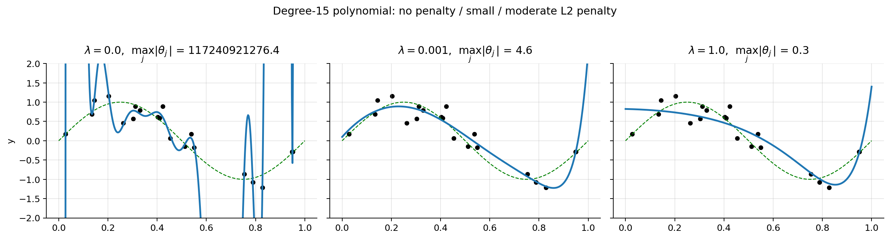
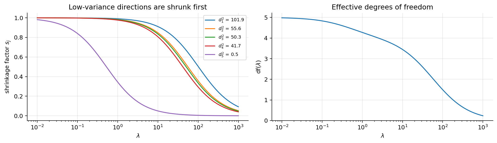
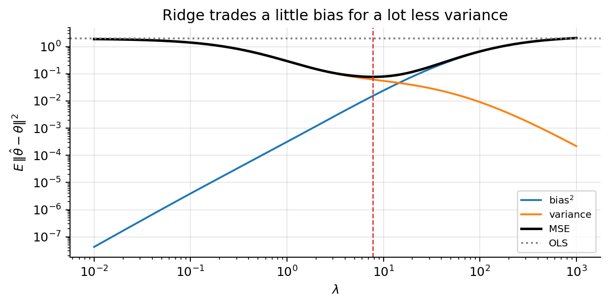
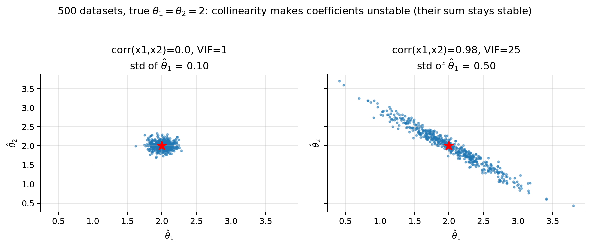
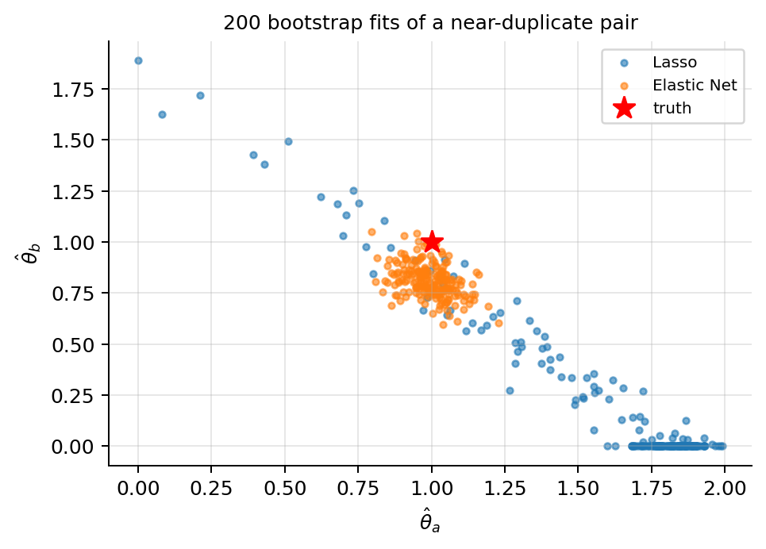
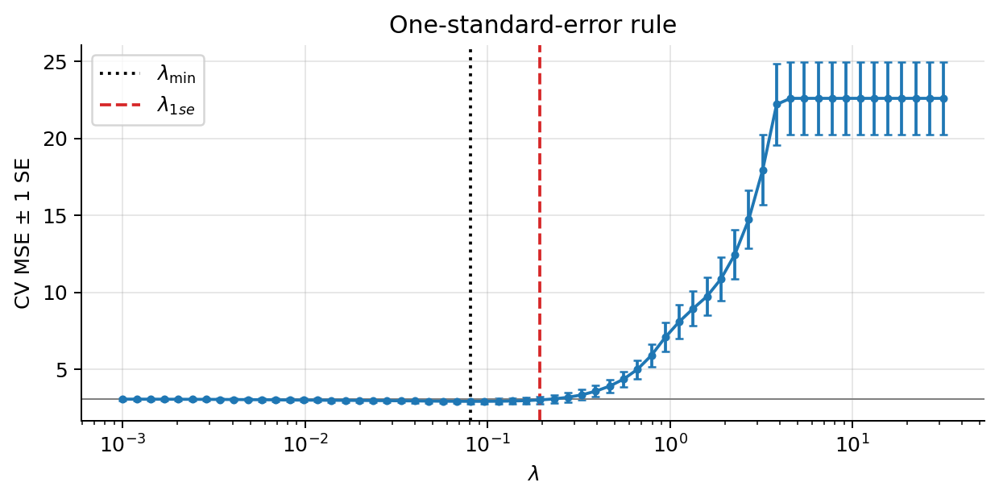
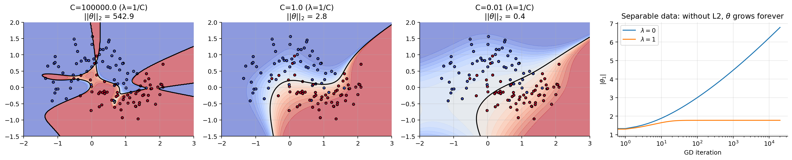
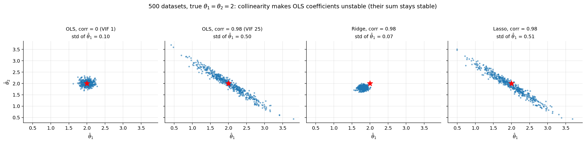

import numpy as np
import matplotlib.pyplot as plt
from scipy import stats
plt.rcParams.update({"figure.dpi": 90, "axes.grid": True, "grid.alpha": 0.3,
"axes.spines.top": False, "axes.spines.right": False})
rng = np.random.default_rng(1)03 · Regularisation, Input Variables and Assumptions
For both linear and logistic regression
Linear and logistic regression are only as good as two choices we make before fitting them: how much freedom the coefficients get, and what goes into the feature vector \(\mathbf{x}\). This note is about both.
What this note covers. Sections 1–8 are regularisation: why large coefficients are a symptom, the penalised loss, Ridge (closed form, the SVD view, its bias and variance), Lasso (why exact zeros, coordinate descent from scratch, its instability with correlated features), Elastic Net, the Bayesian (MAP) reading, how to choose \(\lambda\) (cross-validation and the one-standard-error rule) and regularised logistic regression. Section 9 is a full treatment of input variables: which models need scaling, one-hot encoding and the dummy trap, ordinal and high-cardinality categoricals (target encoding and its leakage), missing values, skewed features, outliers in inputs, interactions and polynomials, collinearity seen from the regularisation side, and preprocessing leakage with scikit-learn pipelines. Section 10 is a practical guide (“what to do when…”) and section 11 compares the assumptions of linear and logistic regression and says what regularisation changes about them.
What you need. Linear regression, its normal equation and the statistics of the OLS estimator (note 01, in particular \(\mathrm{Cov}(\hat{\boldsymbol{\theta}}) = \sigma^2(\mathbf{X}^\top\mathbf{X})^{-1}\) and the collinearity section); logistic regression and its cross-entropy loss (note 02); train/validation/test splits, \(k\)-fold cross-validation and the bias–variance trade-off (note 00). Notation: \(m\) examples, \(n\) features, \(\mathbf{X}\) the \(m\times(n+1)\) design matrix with a first column of ones, \(\boldsymbol{\theta} = (\theta_0, \dots, \theta_n)\) with \(\theta_0\) the intercept, \(\lambda \ge 0\) the regularisation strength.
After this note you can derive and implement Ridge and Lasso from scratch, explain what each does to every direction of the data, choose \(\lambda\) properly, encode any kind of input without leaking the target, and build a scikit-learn pipeline that does all the preprocessing inside cross-validation. The lab is Polynomial Regression and Regularisation.
1. Why regularise?
Three problems that all show up as large, unstable parameters:
- Overfitting: many features (or a high polynomial degree) relative to \(m\). The model fits the noise, and the fitted \(\theta_j\) become huge with alternating signs.
- Collinearity: when features are strongly correlated, \(\mathbf{X}^\top\mathbf{X}\) is nearly singular, so many very different \(\boldsymbol{\theta}\) fit almost equally well. Small changes in the data change \(\boldsymbol{\theta}\) a lot (section 9.9; note 01, section 15.5).
- Separable classes in logistic regression: the MLE does not exist and \(\lVert\boldsymbol{\theta}\rVert\to\infty\) (note 02; section 8 below).
Regularisation adds a penalty on the size of \(\boldsymbol{\theta}\): we accept a little more training error (bias) in exchange for a more stable model (less variance).
Try it. Twenty noisy points from a sine curve, a degree-15 polynomial, and 300 test points from the same curve. With \(\lambda = 0\) the curve wiggles through the training points (train RMSE 0.214, test 3.873). Raising the penalty calms it down: \(\lambda = 0.001\) gives test RMSE 1.051, \(\lambda \approx 0.3\) gives the best test RMSE on the slider, 0.398 (train 0.242); at \(\lambda = 10\) the curve is flattened and both errors are high (train 0.502, test 0.598).
The idea in one picture. Wiggles need huge coefficients with alternating signs; a smooth curve has small ones. Written as a plain polynomial \(\theta_0 + \theta_1t + \dots + \theta_{15}t^{15}\) in \(t = 2x-1\), the unpenalised degree-15 fit of the widget has \(\boldsymbol{\theta} \approx (0, -4, 3, 90, -70, -1\,267, 373, 8\,302, \dots)\), with the largest coefficient about \(49\,000\). So we make large coefficients expensive:
\[ \text{minimise}\quad\underbrace{J(\boldsymbol{\theta})}_{\text{fit the data}} + \lambda\cdot\underbrace{\text{size}(\boldsymbol{\theta})}_{\text{a tax on big }\theta\text{'s}} . \]
\(\lambda\) is the tax rate: \(\lambda = 0\) is plain least squares; \(\lambda\to\infty\) makes any non-zero \(\theta_j\) ruinous and gives a flat line. In between, the model gives up a little training error to keep \(\boldsymbol{\theta}\) small. Two ways to measure the size, \(\sum_j\theta_j^2\) and \(\sum_j|\theta_j|\), give Ridge and Lasso: squares punish big coefficients hard and small ones hardly at all, absolute values punish every coefficient at the same rate, even tiny ones. That difference is the whole story of sections 3–5.
The cell below repeats the experiment with our own 20 points (the features \(x, x^2, \dots, x^{15}\) are standardised, so the coefficients are on a common scale).
# degree-15 polynomial on 20 points: plain least squares vs. Ridge
f_true = lambda x: np.sin(2 * np.pi * x)
x = np.sort(rng.uniform(0, 1, 20)); y = f_true(x) + rng.normal(0, 0.2, 20)
grid = np.linspace(0, 1, 400)
def poly(x, d): # features x, x^2, ..., x^d (standardised below with the training stats)
P = np.vander(x, d + 1, increasing=True)[:, 1:]
return P
d = 15
P, Pg = poly(x, d), poly(grid, d)
mu, sd = P.mean(0), P.std(0)
Xd = np.c_[np.ones(len(x)), (P - mu) / sd]; Xg = np.c_[np.ones(len(grid)), (Pg - mu) / sd]
def ridge(X, y, lam):
L = np.eye(X.shape[1]); L[0, 0] = 0 # do not penalise the intercept
return np.linalg.solve(X.T @ X + lam * L, X.T @ y)
fig, axes = plt.subplots(1, 3, figsize=(14, 3.6), sharey=True)
for ax, lam in zip(axes, [0.0, 1e-3, 1.0]):
th = np.linalg.lstsq(Xd, y, rcond=None)[0] if lam == 0 else ridge(Xd, y, lam)
ax.scatter(x, y, color="k", s=18); ax.plot(grid, f_true(grid), "g--", lw=1)
ax.plot(grid, Xg @ th, lw=2); ax.set_ylim(-2, 2)
ax.set_title(rf"$\lambda={lam}$, $\max_j|\theta_j|$ = {np.abs(th[1:]).max():.1f}")
axes[0].set_ylabel("y"); plt.suptitle("Degree-15 polynomial: no penalty / small / moderate L2 penalty", y=1.03)
plt.tight_layout(); plt.show()
2. The regularised loss
\[ J_{\text{reg}}(\boldsymbol{\theta}) = \underbrace{J(\boldsymbol{\theta})}_{\text{fit the data}} + \underbrace{\lambda\,R(\boldsymbol{\theta})}_{\text{keep }\boldsymbol{\theta}\text{ small}}, \qquad \lambda \ge 0 . \]
| Name | Penalty \(R(\boldsymbol{\theta})\) | Effect |
|---|---|---|
| L2 / Ridge / weight decay | \(\sum_{j=1}^n \theta_j^2 = \lVert\boldsymbol{\theta}\rVert_2^2\) | shrinks all coefficients smoothly |
| L1 / Lasso | \(\sum_{j=1}^n \lvert\theta_j\rvert = \lVert\boldsymbol{\theta}\rVert_1\) | sets some coefficients exactly to 0 (feature selection) |
| Elastic Net | mix of both | sparse and stable with correlated features |
Two rules that always apply.
Do not penalise the intercept \(\theta_0\) (the sums start at \(j=1\)). The intercept only sets the average level of \(y\). To see what goes wrong otherwise, centre the features (\(\sum_i x^{(i)}_j = 0\)) and penalise \(\theta_0\) too, \(J = \frac{1}{2m}\big[\sum_i(y_i - \theta_0 - \boldsymbol{\theta}_{1:n}^\top\mathbf{x}^{(i)})^2 + \lambda\theta_0^2 + \lambda\sum_{j\ge1}\theta_j^2\big]\):
\[ \begin{aligned} \frac{\partial J}{\partial\theta_0} &= -\frac1m\sum_i\big(y_i - \theta_0 - \boldsymbol{\theta}_{1:n}^\top\mathbf{x}^{(i)}\big) + \frac{\lambda}{m}\theta_0 = 0 && \text{chain rule}\\ \sum_i y_i - m\,\theta_0 - \boldsymbol{\theta}_{1:n}^\top\textstyle\sum_i\mathbf{x}^{(i)} &= \lambda\,\theta_0 && \text{multiply by } m\\ \theta_0 &= \frac{m\,\bar y}{m + \lambda} && \textstyle\sum_i\mathbf{x}^{(i)} = \mathbf{0}\text{ (centred)} \end{aligned} \]
Without the penalty \(\theta_0 = \bar y\). With it, the average prediction is pulled from \(\bar y\) towards 0, and it would change if \(y\) were measured from a different origin (°C vs K), which is absurd. The unpenalised intercept moves exactly with any shift of \(y\).
Standardise the features first. Change the units of feature \(j\), \(x_j \to c\,x_j\) (euros instead of thousands of euros: \(c = 1000\)). Without a penalty, the coefficient becomes \(\theta_j/c\) and the predictions do not change (section 9.1 proves it). With the Ridge penalty, the new coefficient \(\theta_j/c\) costs \(\lambda\theta_j^2/c^2\): the change of units has divided the penalty on that feature by \(c^2 = 10^6\). The penalty treats every \(\theta_j\) equally only if the features are on comparable scales, so without scaling the “tax” is arbitrary.
from sklearn.preprocessing import StandardScaler
rng_2 = np.random.default_rng(20); m2 = 200
income_k = rng_2.lognormal(3.4, 0.4, m2) # income in thousands of EUR
age2 = rng_2.uniform(20, 70, m2)
prem2 = 500 + 4 * income_k - 2 * age2 + rng_2.normal(0, 30, m2) # premium in EUR
Z2 = StandardScaler().fit_transform(np.c_[income_k, age2]); Xz = np.c_[np.ones(m2), Z2]
for name, L0 in [("intercept not penalised", 0.0), ("intercept penalised ", 1.0)]:
th2 = np.linalg.solve(Xz.T @ Xz + 200 * np.diag([L0, 1, 1]), Xz.T @ prem2) # lambda = 200 = m
print(f"{name}: intercept {th2[0]:6.1f} (mean premium {prem2.mean():.1f}, m*y_bar/(m+lambda) = {prem2.mean() / 2:.1f})")
for name, unit in [("income in k EUR ", 1.0), ("income in 100k EUR", 100.0)]:
inc = income_k / unit; Xu = np.c_[np.ones(m2), inc, age2]
th_o = np.linalg.lstsq(Xu, prem2, rcond=None)[0]; th_r = ridge(Xu, prem2, 200.0)
th_z = ridge(np.c_[np.ones(m2), StandardScaler().fit_transform(np.c_[inc, age2])], prem2, 200.0)
print(f"{name}: coefficient per k EUR of income: OLS {th_o[1] / unit:.3f}, Ridge {th_r[1] / unit:.3f};"
f" Ridge after standardising: {th_z[1:].round(3)}")intercept not penalised: intercept 530.8 (mean premium 530.8, m*y_bar/(m+lambda) = 265.4)
intercept penalised : intercept 265.4 (mean premium 530.8, m*y_bar/(m+lambda) = 265.4)
income in k EUR : coefficient per k EUR of income: OLS 3.797, Ridge 3.773; Ridge after standardising: [ 23.776 -13.113]
income in 100k EUR: coefficient per k EUR of income: OLS 3.797, Ridge 0.062; Ridge after standardising: [ 23.776 -13.113]Penalising the intercept halves the average prediction, exactly as the formula says (\(\lambda = m\)). For the units: OLS says the same thing in both units (3.797 € of premium per k€ of income). Ridge with the same \(\lambda = 200\) barely touches the coefficient when income is in k€ (3.773), but when income is measured in units of 100 k€ the coefficient is 100 times larger, its penalty \(10^4\) times larger, and Ridge crushes it to 0.062 € per k€: a completely different model from the same data. After standardising, the two choices of units give the same fit.
\(\lambda\) is a hyperparameter: \(\lambda = 0\) is the unregularised model; \(\lambda\to\infty\) forces all \(\theta_{j\ge1}\to 0\) (constant model). It is chosen by cross-validation (section 7).
Conventions differ between books and libraries (factors \(\frac12\), \(\frac1m\), or \(C = 1/\lambda\) in scikit-learn’s LogisticRegression and SVC, where a large \(C\) means weak regularisation). They only rescale \(\lambda\). In this note: Ridge \(J = \frac{1}{2m}\big[\lVert\mathbf{X}\boldsymbol{\theta} - \mathbf{y}\rVert^2 + \lambda\sum_{j\ge1}\theta_j^2\big]\), which matches scikit-learn’s Ridge(alpha=λ) (it minimises \(\lVert\mathbf{y} - \mathbf{X}\mathbf{w}\rVert^2 + \alpha\lVert\mathbf{w}\rVert^2\), i.e. \(2m\) times our \(J\)); Lasso \(J = \frac{1}{2m}\lVert\mathbf{X}\boldsymbol{\theta} - \mathbf{y}\rVert^2 + \lambda\sum_{j\ge1}|\theta_j|\), which is exactly scikit-learn’s Lasso(alpha=λ).
3. L2 regularisation (Ridge regression)
For linear regression we use
\[ J(\boldsymbol{\theta}) = \frac{1}{2m}\Big[\lVert\mathbf{X}\boldsymbol{\theta} - \mathbf{y}\rVert^2 + \lambda\sum_{j=1}^n\theta_j^2\Big]. \]
Let \(\mathbf{L} = \mathrm{diag}(0, 1, \dots, 1)\) so that \(\sum_{j\ge1}\theta_j^2 = \boldsymbol{\theta}^\top\mathbf{L}\boldsymbol{\theta}\).
3.1 The gradient, and why it is called weight decay
The penalty is written with the same \(\frac{1}{2m}\) as the data term only so that its derivative comes out clean. Step by step:
\[ \begin{aligned} \frac{\partial}{\partial\theta_j}\Big(\frac{\lambda}{2m}\sum_{k=1}^n\theta_k^2\Big) &= \frac{\lambda}{2m}\cdot2\theta_j = \frac{\lambda}{m}\,\theta_j \\ &\quad\small \text{only the } k=j \text{ term contains } \theta_j\\ \frac{\partial J_{\text{reg}}}{\partial\theta_j} &= \frac{\partial J}{\partial\theta_j} + \frac{\lambda}{m}\,\theta_j\quad(j\ge1;\ \text{nothing changes for } \theta_0) \\ &\quad\small \text{add the data gradient (least squares or cross-entropy)}\\ \theta_j &\leftarrow \theta_j - \alpha\Big(\frac{\partial J}{\partial\theta_j} + \frac{\lambda}{m}\theta_j\Big) = \theta_j\Big(1 - \frac{\alpha\lambda}{m}\Big) - \alpha\frac{\partial J}{\partial\theta_j} \\ &\quad\small \text{gradient descent; regroup the } \theta_j \text{ terms} \end{aligned} \]
In matrix form, \(\nabla J = \frac{1}{m}\big[\mathbf{X}^\top(\mathbf{X}\boldsymbol{\theta}-\mathbf{y}) + \lambda\mathbf{L}\boldsymbol{\theta}\big]\) (Fact 2 of note 01: the gradient of \(\boldsymbol{\theta}^\top\mathbf{A}\boldsymbol{\theta}\) is \(2\mathbf{A}\boldsymbol{\theta}\) for symmetric \(\mathbf{A}\)). Each step first multiplies \(\theta_j\) by a number slightly below 1 (with \(\alpha = 0.1\), \(\lambda = 1\), \(m = 100\): by \(1 - 0.1\cdot1/100 = 0.999\)), then takes the usual gradient step. Coefficients that the data do not keep pushing up slowly decay towards 0. This is exactly what weight_decay does in neural-network optimisers (NN note 02).
3.2 The closed form
\[ \begin{aligned} \mathbf{X}^\top(\mathbf{X}\boldsymbol{\theta} - \mathbf{y}) + \lambda\mathbf{L}\boldsymbol{\theta} &= \mathbf{0} && \text{set the gradient to zero, drop the common } \tfrac1m\\ \mathbf{X}^\top\mathbf{X}\boldsymbol{\theta} + \lambda\mathbf{L}\boldsymbol{\theta} &= \mathbf{X}^\top\mathbf{y} && \text{move } \mathbf{X}^\top\mathbf{y} \text{ to the right}\\ (\mathbf{X}^\top\mathbf{X} + \lambda\mathbf{L})\,\boldsymbol{\theta} &= \mathbf{X}^\top\mathbf{y} && \text{collect the } \boldsymbol{\theta} \text{ terms} \end{aligned} \]
\[ \boxed{\boldsymbol{\theta}^*_{\text{ridge}} = (\mathbf{X}^\top\mathbf{X} + \lambda\mathbf{L})^{-1}\mathbf{X}^\top\mathbf{y}} \]
Compared with the normal equation \((\mathbf{X}^\top\mathbf{X})^{-1}\mathbf{X}^\top\mathbf{y}\), Ridge just adds \(\lambda\) to the diagonal of \(\mathbf{X}^\top\mathbf{X}\) (except the intercept entry).
This inverse always exists for \(\lambda>0\) (even with duplicated features or \(n > m\)). Proof: for \(\mathbf{v}\ne 0\), \(\;\mathbf{v}^\top(\mathbf{X}^\top\mathbf{X} + \lambda\mathbf{L})\mathbf{v} = \lVert\mathbf{X}\mathbf{v}\rVert^2 + \lambda\sum_{j\ge1}v_j^2\). The second term is \(>0\) unless \(v_1=\dots=v_n=0\); in that case \(\mathbf{X}\mathbf{v} = v_0\mathbf{1}\neq\mathbf{0}\), so the first term is \(>0\). The matrix is positive definite, hence invertible, and \(J\) is strictly convex: a unique minimum. \(\blacksquare\)
3.3 One standardised feature: Ridge divides
Take one feature with \(\frac1m\sum_i (x^{(i)})^2 = 1\) (so \(\mathbf{X}^\top\mathbf{X} = m\)), centred \(y\), no intercept, and let \(z = \frac{1}{m}\sum_i x^{(i)}y^{(i)} = \mathbf{X}^\top\mathbf{y}/m\) (this is the OLS solution). The closed form reads \((m + \lambda)\,\theta = \mathbf{X}^\top\mathbf{y} = m\,z\), so
\[ \theta_{\text{ridge}} = \frac{z}{1 + \lambda/m} = \frac{\theta_{\text{OLS}}}{1 + \lambda/m} . \]
Ridge divides the coefficient by a constant factor. It gets smaller but never exactly zero.
3.4 Ridge through the SVD: shrinkage per principal direction
Removing the intercept. Because \(\theta_0\) is not penalised, its equation is the same as for OLS: \(\partial J/\partial\theta_0 = 0\) gives \(\theta_0 = \bar y - \sum_{j\ge1}\theta_j\bar x_j\). Substituting it back, the slopes minimise \(\frac{1}{2m}\big[\lVert\mathbf{y}_c - \mathbf{X}_c\boldsymbol{\theta}\rVert^2 + \lambda\lVert\boldsymbol{\theta}\rVert^2\big]\), where \(\mathbf{X}_c\) (\(m\times n\)) holds the centred features and \(\mathbf{y}_c = \mathbf{y} - \bar y\mathbf{1}\) (the same argument as in note 01, section 15.5). From here on \(\boldsymbol{\theta}\) means the \(n\) slopes and \(\boldsymbol{\theta}_{\text{ridge}} = (\mathbf{X}_c^\top\mathbf{X}_c + \lambda\mathbf{I})^{-1}\mathbf{X}_c^\top\mathbf{y}_c\).
The singular value decomposition. Any \(m\times n\) matrix with \(m \ge n\) can be written \(\mathbf{X}_c = \mathbf{U}\mathbf{D}\mathbf{V}^\top\), with \(\mathbf{U}\) (\(m\times n\)) having orthonormal columns \(\mathbf{u}_j\) (\(\mathbf{U}^\top\mathbf{U} = \mathbf{I}\)), \(\mathbf{V}\) (\(n\times n\)) orthogonal (\(\mathbf{V}^\top\mathbf{V} = \mathbf{V}\mathbf{V}^\top = \mathbf{I}\)), and \(\mathbf{D} = \mathrm{diag}(d_1 \ge \dots \ge d_n \ge 0)\) the singular values. The columns \(\mathbf{v}_j\) of \(\mathbf{V}\) are the principal directions of the features, and \(d_j^2\) measures how much the data vary along \(\mathbf{v}_j\) (\(d_j^2\) are the eigenvalues \(\lambda_j\) of \(\mathbf{X}_c^\top\mathbf{X}_c\) used in note 01).
\[ \begin{aligned} \mathbf{X}_c^\top\mathbf{X}_c &= \mathbf{V}\mathbf{D}\mathbf{U}^\top\mathbf{U}\mathbf{D}\mathbf{V}^\top = \mathbf{V}\mathbf{D}^2\mathbf{V}^\top \\ &\quad\small \mathbf{U}^\top\mathbf{U} = \mathbf{I}\\ \mathbf{X}_c^\top\mathbf{X}_c + \lambda\mathbf{I} &= \mathbf{V}(\mathbf{D}^2 + \lambda\mathbf{I})\mathbf{V}^\top \\ &\quad\small \mathbf{I} = \mathbf{V}\mathbf{V}^\top\\ (\mathbf{X}_c^\top\mathbf{X}_c + \lambda\mathbf{I})^{-1} &= \mathbf{V}(\mathbf{D}^2 + \lambda\mathbf{I})^{-1}\mathbf{V}^\top \\ &\quad\small \text{invert each factor; } \mathbf{V}^{-1} = \mathbf{V}^\top\\ \boldsymbol{\theta}_{\text{ridge}} &= \mathbf{V}(\mathbf{D}^2 + \lambda\mathbf{I})^{-1}\mathbf{V}^\top\,\mathbf{V}\mathbf{D}\mathbf{U}^\top\mathbf{y}_c \\ &\quad\small \mathbf{X}_c^\top = \mathbf{V}\mathbf{D}\mathbf{U}^\top\\ &= \mathbf{V}\,\mathrm{diag}\Big(\frac{d_j}{d_j^2 + \lambda}\Big)\,\mathbf{U}^\top\mathbf{y}_c . \\ &\quad\small \mathbf{V}^\top\mathbf{V} = \mathbf{I}\text{; diagonal matrices multiply entrywise} \end{aligned} \]
\[ \boxed{\boldsymbol{\theta}_{\text{ridge}} = \mathbf{V}\,\mathrm{diag}\Big(\frac{d_j}{d_j^2+\lambda}\Big)\,\mathbf{U}^\top\mathbf{y}_c, \qquad \hat{\mathbf{y}}_c = \mathbf{X}_c\boldsymbol{\theta}_{\text{ridge}} = \sum_{j=1}^n \mathbf{u}_j\,\underbrace{\frac{d_j^2}{d_j^2+\lambda}}_{s_j(\lambda)}\,\mathbf{u}_j^\top\mathbf{y}_c} \]
(the second formula multiplies the first by \(\mathbf{X}_c = \mathbf{U}\mathbf{D}\mathbf{V}^\top\)). Reading it. Write \(\mathbf{y}_c\) in the orthonormal basis \(\mathbf{u}_1, \dots, \mathbf{u}_n\) of the column space. OLS (\(\lambda = 0\), \(s_j = 1\)) keeps every coordinate \(\mathbf{u}_j^\top\mathbf{y}_c\). Ridge multiplies coordinate \(j\) by the shrinkage factor \(s_j = d_j^2/(d_j^2+\lambda) \in (0,1)\): directions in which the features vary a lot (\(d_j^2 \gg \lambda\)) are barely touched; directions with little variation (\(d_j^2 \ll \lambda\)), exactly the nearly collinear directions where the OLS variance \(\sigma^2/d_j^2\) explodes, are shrunk almost to zero. Principal-component regression (note 01) uses \(s_j = 1\) for the first \(k\) directions and \(0\) for the others; Ridge is its smooth version.
Effective degrees of freedom. For OLS, \(\mathrm{tr}(\mathbf{H})\) counts the parameters (note 01, section 14.4). The Ridge “hat matrix” is \(\mathbf{H}_\lambda = \mathbf{X}_c(\mathbf{X}_c^\top\mathbf{X}_c + \lambda\mathbf{I})^{-1}\mathbf{X}_c^\top = \mathbf{U}\,\mathrm{diag}(s_j)\,\mathbf{U}^\top\), so by the cyclic property of the trace and \(\mathbf{U}^\top\mathbf{U} = \mathbf{I}\),
\[ \mathrm{df}(\lambda) = \mathrm{tr}(\mathbf{H}_\lambda) = \sum_{j=1}^n \frac{d_j^2}{d_j^2 + \lambda}, \]
which decreases from \(n\) at \(\lambda = 0\) to \(0\) as \(\lambda\to\infty\) (plus 1 for the unpenalised intercept). It says how many parameters the penalised model “really” uses, and lets us compare fits with different \(\lambda\) on the scale of a parameter count.
Below: 50 examples, 5 standardised features, of which features 0 and 1 are nearly identical; true slopes \((1, 1, 0.5, -0.5, 0)\), noise \(\sigma = 1\).
rng_s = np.random.default_rng(3); ms, ns = 50, 5
Zs = rng_s.normal(size=(ms, ns)); Zs[:, 1] = Zs[:, 0] + 0.15 * rng_s.normal(size=ms) # features 0 and 1 nearly equal
Xcs = (Zs - Zs.mean(0)) / Zs.std(0) # centred, standardised
theta_s, sigma_s = np.array([1.0, 1.0, 0.5, -0.5, 0.0]), 1.0
ys = Xcs @ theta_s + rng_s.normal(0, sigma_s, ms); ys = ys - ys.mean()
U, dsv, Vt = np.linalg.svd(Xcs, full_matrices=False)
lam_demo = 5.0
th_solve = np.linalg.solve(Xcs.T @ Xcs + lam_demo * np.eye(ns), Xcs.T @ ys)
th_svd = Vt.T @ (dsv / (dsv**2 + lam_demo) * (U.T @ ys))
print("d_j^2 (variation along each principal direction):", (dsv**2).round(2))
print("principal direction with the smallest d_j:", Vt[-1].round(3))
print(f"max |closed form - SVD formula| at lambda = 5: {np.abs(th_solve - th_svd).max():.1e}")
print("shrinkage factors s_j at lambda = 5:", (dsv**2 / (dsv**2 + lam_demo)).round(3),
f"-> df = {np.sum(dsv**2 / (dsv**2 + lam_demo)):.2f} of {ns}")
lam_grid = np.logspace(-2, 3, 200)
S = dsv[None, :]**2 / (dsv[None, :]**2 + lam_grid[:, None])
fig, axes = plt.subplots(1, 2, figsize=(12, 3.6))
for j in range(ns):
axes[0].plot(lam_grid, S[:, j], label=rf"$d_{j + 1}^2$ = {dsv[j]**2:.1f}")
axes[0].set_xscale("log"); axes[0].set_xlabel(r"$\lambda$"); axes[0].set_ylabel(r"shrinkage factor $s_j$"); axes[0].legend(fontsize=8)
axes[0].set_title("Low-variance directions are shrunk first")
axes[1].plot(lam_grid, S.sum(1)); axes[1].set_xscale("log"); axes[1].set_xlabel(r"$\lambda$"); axes[1].set_ylabel(r"df$(\lambda)$")
axes[1].set_title("Effective degrees of freedom")
plt.tight_layout(); plt.show()d_j^2 (variation along each principal direction): [101.89 55.58 50.34 41.66 0.52]
principal direction with the smallest d_j: [ 0.707 -0.707 -0.015 -0.005 0.003]
max |closed form - SVD formula| at lambda = 5: 2.0e-15
shrinkage factors s_j at lambda = 5: [0.953 0.917 0.91 0.893 0.095] -> df = 3.77 of 5
The smallest singular direction is \(\approx(0.7, -0.7, 0, 0, 0)\) up to sign: the difference between the two nearly identical features, along which the data hardly vary (\(d_5^2 = 0.52\) against about 40–100 for the others). Already at \(\lambda = 5\) that direction keeps only 9.5 % of its OLS coordinate, while the others keep 89–95 %.
3.5 Bias and variance of Ridge
Assume the linear model \(\mathbf{y}_c = \mathbf{X}_c\boldsymbol{\theta} + \boldsymbol{\varepsilon}\) with \(\mathbb{E}[\boldsymbol{\varepsilon}] = \mathbf{0}\) and \(\mathrm{Cov}(\boldsymbol{\varepsilon}) = \sigma^2\mathbf{I}\) (note 01, section 14.1), and write \(\boldsymbol{\gamma} = \mathbf{V}^\top\boldsymbol{\theta}\) for the true slopes expressed in the principal directions. Using \(\mathbf{M}_\lambda = (\mathbf{X}_c^\top\mathbf{X}_c + \lambda\mathbf{I})^{-1} = \mathbf{V}(\mathbf{D}^2+\lambda\mathbf{I})^{-1}\mathbf{V}^\top\):
\[ \begin{aligned} \mathbb{E}[\boldsymbol{\theta}_{\text{ridge}}] &= \mathbf{M}_\lambda\mathbf{X}_c^\top\mathbf{X}_c\,\boldsymbol{\theta} = \mathbf{V}\,\mathrm{diag}\Big(\frac{d_j^2}{d_j^2+\lambda}\Big)\mathbf{V}^\top\boldsymbol{\theta} \\ &\quad\small \mathbb{E}[\mathbf{y}_c] = \mathbf{X}_c\boldsymbol{\theta} \\ \text{bias} = \mathbb{E}[\boldsymbol{\theta}_{\text{ridge}}] - \boldsymbol{\theta} &= -\mathbf{V}\,\mathrm{diag}\Big(\frac{\lambda}{d_j^2+\lambda}\Big)\,\boldsymbol{\gamma} \\ &\quad\small \frac{d^2}{d^2+\lambda} - 1 = -\frac{\lambda}{d^2+\lambda} \\ \mathrm{Cov}(\boldsymbol{\theta}_{\text{ridge}}) &= \sigma^2\mathbf{M}_\lambda\mathbf{X}_c^\top\mathbf{X}_c\mathbf{M}_\lambda = \sigma^2\,\mathbf{V}\,\mathrm{diag}\Big(\frac{d_j^2}{(d_j^2+\lambda)^2}\Big)\mathbf{V}^\top \\ &\quad\small \mathrm{Cov}(\mathbf{A}\mathbf{y}) = \mathbf{A}\,\sigma^2\mathbf{I}\,\mathbf{A}^\top \\ \mathrm{MSE}(\lambda) = \mathbb{E}\lVert\boldsymbol{\theta}_{\text{ridge}} - \boldsymbol{\theta}\rVert^2 &= \lVert\text{bias}\rVert^2 + \mathrm{tr}\,\mathrm{Cov} = \sum_{j=1}^n\frac{\lambda^2\gamma_j^2 + \sigma^2d_j^2}{(d_j^2+\lambda)^2} \\ &\quad\small \mathbf{V}\text{ preserves lengths} \end{aligned} \]
At \(\lambda = 0\) this is the OLS value \(\sigma^2\sum_j 1/d_j^2\): no bias, all variance. Increasing \(\lambda\) trades variance for bias. Differentiate one term \(f_j(\lambda) = (\lambda^2\gamma_j^2 + \sigma^2d_j^2)/(d_j^2+\lambda)^2\) (quotient rule):
\[ \begin{aligned} f_j'(\lambda) &= \frac{2\lambda\gamma_j^2(d_j^2+\lambda)^2 - 2(d_j^2+\lambda)(\lambda^2\gamma_j^2 + \sigma^2d_j^2)}{(d_j^2+\lambda)^4} && \text{quotient rule}\\ &= \frac{2\big[\lambda\gamma_j^2(d_j^2+\lambda) - \lambda^2\gamma_j^2 - \sigma^2d_j^2\big]}{(d_j^2+\lambda)^3} = \frac{2d_j^2\,(\lambda\gamma_j^2 - \sigma^2)}{(d_j^2+\lambda)^3} . && \text{cancel one } (d_j^2+\lambda)\text{; expand} \end{aligned} \]
At \(\lambda = 0\) every term has \(f_j'(0) = -2\sigma^2/d_j^4 < 0\), so the MSE decreases as soon as we add a little penalty: there is always a \(\lambda > 0\) for which Ridge has a smaller mean squared error than OLS (Hoerl and Kennard, 1970). This does not contradict the Gauss–Markov theorem (note 01, section 14.8): OLS is best among unbiased estimators, and Ridge is biased. Each term is minimised at \(\lambda = \sigma^2/\gamma_j^2\): a small true effect relative to the noise calls for strong shrinkage. If all \(\gamma_j^2\) were equal to some \(\tau^2\), the best \(\lambda\) would be \(\sigma^2/\tau^2\), which is exactly the Bayesian value of section 6.
gam = Vt @ theta_s
bias2 = np.array([np.sum((l * gam / (dsv**2 + l))**2) for l in lam_grid])
var_r = np.array([sigma_s**2 * np.sum(dsv**2 / (dsv**2 + l)**2) for l in lam_grid])
mse_r = bias2 + var_r; k_best = np.argmin(mse_r)
mse_ols = sigma_s**2 * np.sum(1 / dsv**2)
print(f"OLS: MSE = {mse_ols:.3f}; best Ridge: lambda = {lam_grid[k_best]:.2f}, MSE = {mse_r[k_best]:.3f}"
f" (bias^2 {bias2[k_best]:.3f} + variance {var_r[k_best]:.3f})")
Ysim = (Xcs @ theta_s)[:, None] + np.random.default_rng(4).normal(0, sigma_s, (ms, 4000)); Ysim -= Ysim.mean(0)
for l in [1e-9, lam_grid[k_best], 50.0]: # Monte Carlo check of the formula
TH_r = Vt.T @ ((dsv / (dsv**2 + l))[:, None] * (U.T @ Ysim))
theory = mse_ols if l < 1e-6 else np.interp(l, lam_grid, mse_r)
print(f"lambda = {l:7.2f}: simulated MSE {np.mean(((TH_r - theta_s[:, None])**2).sum(0)):.3f}, formula {theory:.3f}")
plt.figure(figsize=(7, 3.6))
plt.plot(lam_grid, bias2, label=r"bias$^2$"); plt.plot(lam_grid, var_r, label="variance"); plt.plot(lam_grid, mse_r, "k", lw=2, label="MSE")
plt.axhline(mse_ols, color="gray", ls=":", label="OLS")
plt.axvline(lam_grid[k_best], color="C3", ls="--", lw=1)
plt.xscale("log"); plt.yscale("log"); plt.xlabel(r"$\lambda$"); plt.ylabel(r"$E\,\|\hat\theta - \theta\|^2$"); plt.legend(fontsize=8)
plt.title("Ridge trades a little bias for a lot less variance"); plt.tight_layout(); plt.show()OLS: MSE = 1.977; best Ridge: lambda = 7.75, MSE = 0.077 (bias^2 0.015 + variance 0.062)
lambda = 0.00: simulated MSE 1.996, formula 1.977
lambda = 7.75: simulated MSE 0.077, formula 0.077
lambda = 50.00: simulated MSE 0.321, formula 0.322
Here the best Ridge fit has an estimation error about 25 times smaller than OLS, almost all of it gained in the one collinear direction.
4. L1 regularisation (Lasso)
\[ J(\boldsymbol{\theta}) = \frac{1}{2m}\lVert\mathbf{X}\boldsymbol{\theta} - \mathbf{y}\rVert^2 + \lambda\sum_{j=1}^n\lvert\theta_j\rvert \]
\(|\theta_j|\) has a kink at 0 (slope \(+1\) on the right, \(-1\) on the left, no derivative at 0), so there is no closed form. \(J\) is still convex (a sum of convex functions). It is solved by coordinate descent (section 4.3, what scikit-learn does) or by proximal / sub-gradient methods.
4.1 Why exact zeros? The one-feature case
Same setting as section 3.3: we must minimise
\[ g(\theta) = \tfrac12(\theta - z)^2 + \lambda\lvert\theta\rvert . \]
- If \(\theta>0\): \(g'(\theta) = \theta - z + \lambda = 0 \Rightarrow \theta = z - \lambda\), valid only if \(z > \lambda\).
- If \(\theta<0\): \(g'(\theta) = \theta - z - \lambda = 0 \Rightarrow \theta = z + \lambda\), valid only if \(z < -\lambda\).
- Otherwise (\(|z| \le \lambda\)) neither case applies and the minimum is at the kink, \(\theta = 0\). (Check: the subgradient of \(g\) at \(0\) is the interval \([-z-\lambda,\,-z+\lambda]\), which contains \(0\) exactly when \(|z|\le\lambda\).)
Together, this is the soft-thresholding operator:
\[ \boxed{\theta_{\text{lasso}} = S(z, \lambda) = \mathrm{sign}(z)\,\max\big(|z| - \lambda,\, 0\big)} \]
A feature whose OLS coefficient is smaller than \(\lambda\) in absolute value is switched off. Bigger ones are shifted towards 0 by exactly \(\lambda\). Lasso subtracts, Ridge divides. The L2 penalty’s slope \(2\theta\) vanishes near 0, so it never quite pushes all the way to zero; the L1 penalty pushes with constant force \(\lambda\) however small \(\theta\) is.
Try it. The regularised coefficient as a function of the OLS coefficient \(z\). At \(\lambda = 0\) all three lines coincide. At \(\lambda = 0.5\), Ridge divides by \(1.5\) while Lasso subtracts \(0.5\) and sets every \(|z| \le 0.5\) to zero; at \(\lambda = 1.5\) the dead zone is wide and only large coefficients survive Lasso. (The widget writes both penalties per example: Ridge \(\frac12(\theta - z)^2 + \frac{\lambda}{2}\theta^2\), whose minimum \(z/(1+\lambda)\) is section 3.3’s \(z/(1+\lambda/m)\) with \(\lambda/m\) written as \(\lambda\).)
4.2 The geometric picture
Minimising \(J + \lambda R\) is equivalent to minimising \(J\) subject to \(R(\boldsymbol{\theta})\le t\) for some \(t\) (each \(\lambda\) corresponds to a budget \(t\)). The solution is where the elliptical contours of \(J\) first touch the constraint region. The L1 ball is a diamond with corners on the axes, and the contours usually hit a corner, where some \(\theta_j=0\). The L2 ball is round, so the contact point generically has all coordinates non-zero. The Elastic Net ball (section 5) is in between: rounded edges, but still corners.
z = np.linspace(-3, 3, 400); lam = 1.0
fig, axes = plt.subplots(1, 2, figsize=(12, 4.2))
axes[0].plot(z, z, "k:", label="OLS ($\\theta=z$)")
axes[0].plot(z, z / (1 + lam), lw=2, label=r"Ridge: $z/(1+\lambda/m)$ with $\lambda/m=1$")
axes[0].plot(z, np.sign(z) * np.maximum(np.abs(z) - lam, 0), lw=2, label=r"Lasso: soft-threshold, $\lambda=1$")
axes[0].set_xlabel(r"OLS coefficient $z$"); axes[0].set_ylabel("regularised coefficient"); axes[0].legend()
axes[0].set_title("Shrinkage of one coefficient")
# constraint-region picture
A, B = np.meshgrid(np.linspace(-2, 3.5, 300), np.linspace(-2, 3.5, 300))
th_ols = np.array([2.2, 1.0]); M = np.array([[1.0, 0.6], [0.6, 0.8]])
Q = M[0, 0] * (A - th_ols[0])**2 + 2 * M[0, 1] * (A - th_ols[0]) * (B - th_ols[1]) + M[1, 1] * (B - th_ols[1])**2
ax = axes[1]
ax.contour(A, B, Q, levels=[0.1, 0.4, 0.9, 1.6, 2.35, 3.4], colors="gray", linewidths=1)
t = 1.0
ax.fill([t, 0, -t, 0], [0, t, 0, -t], alpha=0.3, color="C1", label=r"L1 ball $|\theta_1|+|\theta_2|\leq t$")
circ = plt.Circle((0, 0), t, alpha=0.3, color="C0", label=r"L2 ball $\theta_1^2+\theta_2^2\leq t^2$"); ax.add_patch(circ)
# solve the two constrained problems numerically on the grid
inside1 = np.abs(A) + np.abs(B) <= t; inside2 = A**2 + B**2 <= t**2
k1 = np.argmin(np.where(inside1, Q, np.inf)); k2 = np.argmin(np.where(inside2, Q, np.inf))
ax.plot(A.flat[k1], B.flat[k1], "o", color="C1", ms=9, mec="k", label=f"L1 solution ({A.flat[k1]:.2f}, {B.flat[k1]:.2f})")
ax.plot(A.flat[k2], B.flat[k2], "o", color="C0", ms=9, mec="k", label=f"L2 solution ({A.flat[k2]:.2f}, {B.flat[k2]:.2f})")
ax.plot(*th_ols, "k*", ms=12, label="unregularised minimum")
ax.axhline(0, color="k", lw=0.6); ax.axvline(0, color="k", lw=0.6); ax.set_aspect("equal")
ax.set_xlabel(r"$\theta_1$"); ax.set_ylabel(r"$\theta_2$"); ax.legend(fontsize=8, loc="lower right")
ax.set_title("Contours of $J$ touch the diamond at a corner")
plt.tight_layout(); plt.show()
4.3 Coordinate descent from scratch
With several features the one-feature solution becomes the building block of an algorithm. Take standardised features and centred \(y\) (so there is no intercept to worry about, as in 3.4), and minimise over one coordinate \(\theta_j\) with all the others fixed. Let \(\mathbf{r}^{(j)} = \mathbf{y} - \sum_{k\ne j}\mathbf{x}_k\theta_k\) be the partial residual (what is left for feature \(j\) to explain), so \(\mathbf{y} - \mathbf{X}\boldsymbol{\theta} = \mathbf{r}^{(j)} - \mathbf{x}_j\theta_j\). With \(a_j = \mathbf{x}_j^\top\mathbf{x}_j/m\) and \(z_j = \mathbf{x}_j^\top\mathbf{r}^{(j)}/m\):
\[ \begin{aligned} J(\theta_j) &= \frac{1}{2m}\lVert\mathbf{r}^{(j)} - \mathbf{x}_j\theta_j\rVert^2 + \lambda|\theta_j| + \text{const} && \text{terms without } \theta_j \text{ are constants}\\ &= \frac{a_j}{2}\theta_j^2 - z_j\theta_j + \lambda|\theta_j| + \text{const} && \text{expand the square, divide by } m\\ &= a_j\Big[\tfrac12\big(\theta_j - z_j/a_j\big)^2 + \tfrac{\lambda}{a_j}|\theta_j|\Big] + \text{const} && \text{complete the square}\\ \Rightarrow\quad \theta_j &= S\big(z_j/a_j,\ \lambda/a_j\big) = \frac{S(z_j, \lambda)}{a_j} . && \text{section 4.1; } S(z/a, \lambda/a) = S(z,\lambda)/a \text{ for } a > 0 \end{aligned} \]
Coordinate descent cycles through \(j = 1, \dots, n\) applying this update until nothing changes. Each update minimises \(J\) exactly along one coordinate, so \(J\) never increases; because \(J\) is convex and the non-smooth part is a sum of one-coordinate terms, the iterations converge to the global minimum. Two practical details:
- \(\lambda_{\max}\). \(\boldsymbol{\theta} = \mathbf{0}\) is optimal iff no single coordinate wants to move from 0, i.e. (with \(\mathbf{r}^{(j)} = \mathbf{y}\)) \(|\mathbf{x}_j^\top\mathbf{y}/m| \le \lambda\) for every \(j\). So for \(\lambda \ge \lambda_{\max} = \max_j|\mathbf{x}_j^\top\mathbf{y}|/m\) all coefficients are zero, and a path of solutions starts there.
- Warm starts. Solve for a decreasing grid of \(\lambda\) values, starting each from the previous solution: consecutive solutions are close, so fewer sweeps are needed (the code below counts them).
from sklearn.linear_model import Lasso
def soft(z, t):
return np.sign(z) * np.maximum(np.abs(z) - t, 0.0)
def lasso_cd(X, y, lam, theta=None, max_sweeps=1000, tol=1e-10):
"""Coordinate descent for (1/2m)||y - X theta||^2 + lam ||theta||_1 (X and y centred, no intercept)."""
m_, n_ = X.shape
theta = np.zeros(n_) if theta is None else theta.copy()
a = (X**2).sum(0) / m_ # a_j = x_j^T x_j / m
r = y - X @ theta # full residual, kept up to date
for sweep in range(1, max_sweeps + 1):
biggest = 0.0
for j in range(n_):
z_j = X[:, j] @ r / m_ + a[j] * theta[j] # x_j^T r^(j) / m, since r^(j) = r + x_j theta_j
new = soft(z_j, lam) / a[j]
if new != theta[j]:
r -= X[:, j] * (new - theta[j]); biggest = max(biggest, abs(new - theta[j])); theta[j] = new
if biggest < tol:
break
return theta, sweep
rng_cd = np.random.default_rng(5); mcd, ncd = 100, 8
Xcd = rng_cd.normal(size=(mcd, ncd)); Xcd = (Xcd - Xcd.mean(0)) / Xcd.std(0)
ycd = Xcd @ np.array([3, -2, 0, 1.5, 0, 0, 0, 0]) + rng_cd.normal(0, 1.5, mcd); ycd -= ycd.mean()
for lam_cd in [0.05, 0.3, 1.0]:
th_cd, sweeps = lasso_cd(Xcd, ycd, lam_cd)
th_sk = Lasso(alpha=lam_cd, fit_intercept=False, tol=1e-12, max_iter=100000).fit(Xcd, ycd).coef_
print(f"lambda = {lam_cd}: {sweeps:3d} sweeps, non-zero {np.sum(th_cd != 0)}, max |ours - sklearn| = {np.abs(th_cd - th_sk).max():.1e}")
lam_max = np.max(np.abs(Xcd.T @ ycd)) / mcd
print(f"lambda_max = {lam_max:.3f}: non-zero at 1.001*lambda_max = {np.sum(lasso_cd(Xcd, ycd, 1.001 * lam_max)[0] != 0)}, "
f"at 0.99*lambda_max = {np.sum(lasso_cd(Xcd, ycd, 0.99 * lam_max)[0] != 0)}")
path_grid = lam_max * np.logspace(0, -3, 50)
cold = sum(lasso_cd(Xcd, ycd, l)[1] for l in path_grid)
warm, th_w = 0, np.zeros(ncd)
for l in path_grid:
th_w, s_ = lasso_cd(Xcd, ycd, l, theta=th_w); warm += s_
print(f"whole path of 50 lambdas: {cold} sweeps from zero, {warm} with warm starts")lambda = 0.05: 15 sweeps, non-zero 7, max |ours - sklearn| = 5.9e-12
lambda = 0.3: 9 sweeps, non-zero 3, max |ours - sklearn| = 2.1e-12
lambda = 1.0: 9 sweeps, non-zero 3, max |ours - sklearn| = 1.4e-12
lambda_max = 3.603: non-zero at 1.001*lambda_max = 0, at 0.99*lambda_max = 1
whole path of 50 lambdas: 565 sweeps from zero, 477 with warm starts4.4 What Lasso does well and where it breaks
- Sparse, interpretable models: many coefficients are exactly zero, which is feature selection built into the fit.
- Biased survivors: the coefficients that survive are shrunk by \(\lambda\) (4.1). A common fix is to refit plain least squares on the selected features (the “relaxed” Lasso), choosing everything by cross-validation.
- At most \(m\) non-zero coefficients when \(n > m\).
- Unstable with correlated features. If two features are nearly copies of each other, Lasso tends to keep one and drop the other, and which one depends on small details of the sample. Section 5 proves why and shows the fix; the demo below shows the symptom: 100 examples, two relevant features with correlation above 0.99 (true coefficients 1 and 1), eight irrelevant ones, and 200 bootstrap resamples.
from sklearn.linear_model import ElasticNet
rng_li = np.random.default_rng(5); mli = 100
x_a = rng_li.normal(size=mli); x_b = x_a + 0.1 * rng_li.normal(size=mli) # a near-copy of x_a
Xli = np.c_[x_a, x_b, rng_li.normal(size=(mli, 8))]; Xli = (Xli - Xli.mean(0)) / Xli.std(0)
yli = Xli[:, 0] + Xli[:, 1] + rng_li.normal(size=mli); yli -= yli.mean()
print(f"corr(x_a, x_b) = {np.corrcoef(Xli[:, 0], Xli[:, 1])[0, 1]:.4f}")
rng_bt = np.random.default_rng(6); fits = {"Lasso": [], "Elastic Net": []}
for _ in range(200):
i = rng_bt.integers(0, mli, mli)
fits["Lasso"].append(Lasso(alpha=0.1).fit(Xli[i], yli[i]).coef_[:2])
fits["Elastic Net"].append(ElasticNet(alpha=0.1, l1_ratio=0.3).fit(Xli[i], yli[i]).coef_[:2])
fig, ax = plt.subplots(figsize=(5.5, 4))
for name, F in fits.items():
F = np.array(F); ax.scatter(F[:, 0], F[:, 1], s=10, alpha=0.6, label=name)
print(f"{name:11s}: only one of the pair selected in {np.mean((F[:, 0] == 0) ^ (F[:, 1] == 0)):.0%} of the resamples;"
f" sd of theta_a - theta_b = {np.std(F[:, 0] - F[:, 1]):.2f}, sd of theta_a + theta_b = {np.std(F.sum(1)):.2f}")
ax.plot(1, 1, "r*", ms=12, label="truth"); ax.set_xlabel(r"$\hat\theta_a$"); ax.set_ylabel(r"$\hat\theta_b$"); ax.legend(fontsize=8)
ax.set_title("200 bootstrap fits of a near-duplicate pair", fontsize=10); plt.tight_layout(); plt.show()corr(x_a, x_b) = 0.9934
Lasso : only one of the pair selected in 58% of the resamples; sd of theta_a - theta_b = 0.79, sd of theta_a + theta_b = 0.08
Elastic Net: only one of the pair selected in 0% of the resamples; sd of theta_a - theta_b = 0.13, sd of theta_a + theta_b = 0.09
The sum of the two coefficients is equally stable for both methods (the data determine it well); the split between them is not. Lasso keeps only one of the pair in more than half of the resamples, and which one it keeps flips from resample to resample; Elastic Net always keeps both and splits the weight far more evenly.
5. Elastic Net
\[ J(\boldsymbol{\theta}) = \frac{1}{2m}\lVert\mathbf{X}\boldsymbol{\theta} - \mathbf{y}\rVert^2 + \lambda\Big[\rho\,\lVert\boldsymbol{\theta}\rVert_1 + \tfrac{1-\rho}{2}\lVert\boldsymbol{\theta}\rVert_2^2\Big], \qquad \rho\in[0,1], \]
(\(\rho = 1\) is Lasso, \(\rho = 0\) Ridge; scikit-learn’s ElasticNet(alpha=λ, l1_ratio=ρ) minimises exactly this.) Lasso’s weaknesses (on correlated features it keeps one of near-duplicates arbitrarily or splits the weight erratically, section 4.4, and it can select at most \(m\) features) come from the flatness of the L1 penalty along directions that keep \(|\theta_i| + |\theta_k|\) fixed. The L2 part removes that flatness.
The grouping effect (proof for identical features). Suppose \(\mathbf{x}_i = \mathbf{x}_k\). The data term depends on \(\theta_i\) and \(\theta_k\) only through their sum \(s = \theta_i + \theta_k\), because \(\mathbf{x}_i\theta_i + \mathbf{x}_k\theta_k = \mathbf{x}_i s\). For a fixed \(s\):
\[ \begin{aligned} |\theta_i| + |\theta_k| &\ge |s| \\ &\quad\small \text{triangle inequality; equality iff } \theta_i, \theta_k \text{ have the same sign (or are 0)}\\ \theta_i^2 + \theta_k^2 &= \tfrac12 s^2 + \tfrac12(\theta_i - \theta_k)^2 \ge \tfrac12 s^2 \\ &\quad\small \text{expand; equality iff } \theta_i = \theta_k \end{aligned} \]
With \(\rho < 1\) the L2 term is present, so the unique best split is \(\theta_i = \theta_k = s/2\) (the equal split also minimises the L1 term): identical features get identical coefficients. With \(\rho = 1\) (pure Lasso) every same-sign split with \(|\theta_i| + |\theta_k| = |s|\) gives the same \(J\): there are infinitely many solutions, and the algorithm picks one arbitrarily. For correlated but not identical features the same mechanism makes their Elastic Net coefficients close (the difference is bounded in terms of \(1 - \mathrm{corr}\)), which is what the bootstrap above shows. Use Elastic Net when you want feature selection but have groups of correlated features.
6. Regularisation as a prior (MAP estimation)
In notes 01–02 the unregularised loss was the negative log-likelihood. Now also put a prior \(p(\boldsymbol{\theta})\) on the parameters (a belief about them before seeing the data) and maximise the posterior (Bayes’ rule, \(p(\boldsymbol{\theta}\mid\mathcal{D}) \propto p(\mathcal{D}\mid\boldsymbol{\theta})\,p(\boldsymbol{\theta})\)):
\[ \hat{\boldsymbol{\theta}}_{\text{MAP}} = \arg\max_{\boldsymbol{\theta}}\big[\log p(\mathcal{D}\mid\boldsymbol{\theta}) + \log p(\boldsymbol{\theta})\big] = \arg\min_{\boldsymbol{\theta}}\big[\underbrace{-\log p(\mathcal{D}\mid\boldsymbol{\theta})}_{\text{loss}} \underbrace{-\log p(\boldsymbol{\theta})}_{\text{penalty}}\big]. \]
- Gaussian prior \(\theta_j\sim\mathcal{N}(0,\tau^2)\) independently: \(\;-\log p(\boldsymbol{\theta}) = \frac{1}{2\tau^2}\sum_j\theta_j^2 + \text{const}\) → L2.
- Laplace prior \(p(\theta_j)\propto e^{-|\theta_j|/b}\): \(\;-\log p(\boldsymbol{\theta}) = \frac{1}{b}\sum_j|\theta_j| + \text{const}\) → L1. (The Laplace density has a sharp peak at 0, a “belief” that many coefficients are exactly zero.)
Linear regression with a Gaussian prior is Ridge with \(\lambda = \sigma^2/\tau^2\). The negative log-likelihood of Gaussian noise with variance \(\sigma^2\) is \(\frac{1}{2\sigma^2}\lVert\mathbf{X}\boldsymbol{\theta} - \mathbf{y}\rVert^2 + \text{const}\) (note 01, section 10), so
\[ \begin{aligned} -\log p(\boldsymbol{\theta}\mid\mathcal{D}) &= \frac{1}{2\sigma^2}\lVert\mathbf{X}\boldsymbol{\theta} - \mathbf{y}\rVert^2 + \frac{1}{2\tau^2}\sum_{j\ge1}\theta_j^2 + \text{const} && \text{loss + penalty (flat prior on } \theta_0)\\ &\propto \lVert\mathbf{X}\boldsymbol{\theta} - \mathbf{y}\rVert^2 + \frac{\sigma^2}{\tau^2}\sum_{j\ge1}\theta_j^2 && \text{multiply by } 2\sigma^2 > 0\text{: same arg-min} \end{aligned} \]
which is \(2m\) times the Ridge \(J\) of section 3 with \(\lambda = \sigma^2/\tau^2\). A strong prior (small \(\tau\)) or noisy data (large \(\sigma\)) means more regularisation, and this is the value that section 3.5 found optimal when all true effects have size \(\tau\). In the same way the Laplace prior gives \(\frac{1}{2\sigma^2}\lVert\cdot\rVert^2 + \frac1b\sum_j|\theta_j|\); multiplying by \(\sigma^2/m\) gives the Lasso \(J\) with \(\lambda = \sigma^2/(mb)\). (MAP is the mode of the posterior. A full Bayesian treatment uses the whole posterior and gives uncertainty too; the posterior mean under a Laplace prior is not sparse.)
7. Choosing \(\lambda\)
7.1 Coefficient paths
A coefficient path shows each \(\theta_j\) as \(\lambda\) varies. In the slide’s version, 8 standardised features of which only 3 truly matter (solid lines, dashed = irrelevant), with feature 5 a near-copy of feature 0:
Below, our own version: a dataset with 10 features, only 4 of which truly matter, and feature 5 again a near-copy of feature 0. (For Ridge we pass alpha = mλ to scikit-learn, so that both penalties are “per example” as in the widget of section 4.1 and the two \(\lambda\) axes are comparable.)
from sklearn.linear_model import Ridge, LassoCV
m, n = 120, 10
Xr = rng.normal(size=(m, n)); Xr[:, 5] = Xr[:, 0] + 0.1 * rng.normal(size=m) # feature 5 ~ copy of feature 0
theta_true = np.array([3, -2, 0, 1.5, 0, 0, 0, 1, 0, 0])
y = Xr @ theta_true + rng.normal(0, 1.5, m)
scaler = StandardScaler().fit(Xr); Xs = scaler.transform(Xr)
lams = np.logspace(-3, 1.5, 60)
paths_l1 = np.array([Lasso(alpha=a, max_iter=50000).fit(Xs, y).coef_ for a in lams])
paths_l2 = np.array([Ridge(alpha=a * m).fit(Xs, y).coef_ for a in lams])
cv = LassoCV(alphas=lams, cv=5, max_iter=50000).fit(Xs, y)
fig, axes = plt.subplots(1, 3, figsize=(16, 4))
for ax, P, name in [(axes[0], paths_l2, "Ridge"), (axes[1], paths_l1, "Lasso")]:
for j in range(n):
ax.plot(lams, P[:, j], lw=2 if theta_true[j] != 0 else 1, ls="-" if theta_true[j] != 0 else "--")
ax.set_xscale("log"); ax.set_xlabel(r"$\lambda$"); ax.set_ylabel(r"$\theta_j$"); ax.set_title(f"{name} coefficient path")
axes[1].axvline(cv.alpha_, color="k", ls=":", label=r"$\lambda$ chosen by 5-fold CV"); axes[1].legend()
mse_path = cv.mse_path_.mean(1)
axes[2].plot(cv.alphas_, mse_path, "o-", ms=3); axes[2].axvline(cv.alpha_, color="k", ls=":")
axes[2].set_xscale("log"); axes[2].set_xlabel(r"$\lambda$"); axes[2].set_ylabel("CV MSE"); axes[2].set_title("Lasso: CV error vs. $\\lambda$")
plt.tight_layout(); plt.show()
print("true theta :", theta_true)
print("OLS (no penalty) :", np.linalg.lstsq(np.c_[np.ones(m), Xs], y, rcond=None)[0][1:].round(2))
print("lasso (CV lambda) :", cv.coef_.round(2))
true theta : [ 3. -2. 0. 1.5 0. 0. 0. 1. 0. 0. ]
OLS (no penalty) : [ 4.62 -1.32 0.07 1.45 0.15 -1.03 0.32 1.17 -0.01 -0.07]
lasso (CV lambda) : [ 3.53 -1.27 0.01 1.35 0.06 0. 0.28 1.08 -0. -0. ]Solid lines are the true non-zero coefficients, dashed the irrelevant ones. Ridge shrinks everything gradually. Lasso switches coefficients off one by one as \(\lambda\) grows; at the CV-chosen \(\lambda\) it has set three of the six irrelevant coefficients exactly to zero and kept the other three small (0.01, 0.06 and 0.28). Look at feature 0 and its near-copy, feature 5: OLS gives them large coefficients of opposite sign (4.62 and −1.03, pure collinearity noise), while Lasso keeps feature 0 and switches feature 5 off; which one of a correlated pair Lasso keeps is somewhat arbitrary (section 4.4). (Coefficients are on the standardised scale, so they differ slightly from theta_true.)
7.2 \(k\)-fold cross-validation and the one-standard-error rule
Training error always prefers \(\lambda = 0\): it cannot choose \(\lambda\). Validation error has a minimum, and that is the \(\lambda\) we want:
Recipe (note 00 explains \(k\)-fold CV): choose a log grid of \(\lambda\) values (the interesting range spans several orders of magnitude; start from \(\lambda_{\max}\) for Lasso, section 4.3); for each \(\lambda\), fit on \(k-1\) folds and measure the error on the held-out fold; average over the \(k\) folds to get \(\text{CV}(\lambda)\), and also compute its standard error \(\text{SE}(\lambda) = \text{sd}_{\text{folds}}/\sqrt{k}\).
The one-standard-error rule. \(\text{CV}(\lambda)\) is itself an estimate with noise of size about \(\text{SE}(\lambda)\), so values of \(\lambda\) whose CV error is within one SE of the minimum are statistically indistinguishable from the best. Among them, pick the simplest model: the largest \(\lambda\) with \(\text{CV}(\lambda) \le \text{CV}(\lambda_{\min}) + \text{SE}(\lambda_{\min})\). For Lasso this usually gives a noticeably sparser model at a small cost in accuracy. Below, \(\lambda_{1se}\) keeps 5 coefficients instead of 7, and its test MSE is 3.06 instead of 2.88 (the noise variance alone is \(1.5^2 = 2.25\)).
folds = cv.mse_path_ # shape (number of lambdas, number of folds)
cv_mean, cv_se = folds.mean(1), folds.std(1, ddof=1) / np.sqrt(folds.shape[1])
k_min = np.argmin(cv_mean)
lam_min = cv.alphas_[k_min]; lam_1se = cv.alphas_[cv_mean <= cv_mean[k_min] + cv_se[k_min]].max()
rng_te = np.random.default_rng(22) # fresh test data from the same process
Xr_te = rng_te.normal(size=(5000, n)); Xr_te[:, 5] = Xr_te[:, 0] + 0.1 * rng_te.normal(size=5000)
y_te = Xr_te @ theta_true + rng_te.normal(0, 1.5, 5000)
for name, l in [("lambda_min", lam_min), ("lambda_1se", lam_1se)]:
las = Lasso(alpha=l, max_iter=50000).fit(Xs, y)
print(f"{name} = {l:.3f}: CV MSE {cv_mean[cv.alphas_ == l][0]:.3f}, non-zero coefficients {np.sum(las.coef_ != 0)}, "
f"test MSE {np.mean((y_te - las.predict(scaler.transform(Xr_te)))**2):.3f}")
plt.figure(figsize=(7, 3.6))
plt.errorbar(cv.alphas_, cv_mean, yerr=cv_se, fmt="o-", ms=3, capsize=2)
plt.axvline(lam_min, color="k", ls=":", label=r"$\lambda_{\min}$"); plt.axvline(lam_1se, color="C3", ls="--", label=r"$\lambda_{1se}$")
plt.axhline(cv_mean[k_min] + cv_se[k_min], color="gray", lw=0.8)
plt.xscale("log"); plt.xlabel(r"$\lambda$"); plt.ylabel("CV MSE ± 1 SE"); plt.legend(); plt.title("One-standard-error rule")
plt.tight_layout(); plt.show()lambda_min = 0.081: CV MSE 2.917, non-zero coefficients 7, test MSE 2.881
lambda_1se = 0.194: CV MSE 3.008, non-zero coefficients 5, test MSE 3.064
Put the preprocessing inside the CV loop. The scaling (and any imputation or encoding) must be fitted on the training folds only; otherwise the validation fold leaks into \(\mu\) and \(\sigma\) (section 9.10). In scikit-learn, put the scaler and the model in a Pipeline and cross-validate the pipeline. RidgeCV, LassoCV, ElasticNetCV and LogisticRegressionCV do the search for you. RidgeCV by default uses leave-one-out CV computed without refitting, with the same shortcut as for least squares (note 01, section 15.7: the leave-one-out residual is \(e_i/(1 - h_{ii})\), here with the diagonal of \(\mathbf{H}_\lambda\)).
8. Regularised logistic regression
Same idea, added to the cross-entropy of note 02 (\(h_{\boldsymbol{\theta}}(\mathbf{x}) = \sigma(\boldsymbol{\theta}^\top\mathbf{x})\) with the sigmoid \(\sigma(t) = 1/(1+e^{-t})\)):
\[ J(\boldsymbol{\theta}) = -\frac{1}{m}\sum_{i=1}^m\Big[y^{(i)}\log h_{\boldsymbol{\theta}}(\mathbf{x}^{(i)}) + (1-y^{(i)})\log(1-h_{\boldsymbol{\theta}}(\mathbf{x}^{(i)}))\Big] + \frac{\lambda}{2m}\sum_{j=1}^n\theta_j^2, \]
\[ \nabla J = \frac{1}{m}\Big[\mathbf{X}^\top\big(\sigma(\mathbf{X}\boldsymbol{\theta}) - \mathbf{y}\big) + \lambda\mathbf{L}\boldsymbol{\theta}\Big],\qquad \nabla^2 J = \frac1m\Big[\mathbf{X}^\top\mathbf{W}\mathbf{X} + \lambda\mathbf{L}\Big],\quad \mathbf{W} = \mathrm{diag}\big(h_i(1-h_i)\big). \]
- Strictly convex. For \(\mathbf{v}\ne\mathbf{0}\), \(\mathbf{v}^\top(\mathbf{X}^\top\mathbf{W}\mathbf{X} + \lambda\mathbf{L})\mathbf{v} = \sum_i h_i(1-h_i)(\mathbf{x}^{(i)\top}\mathbf{v})^2 + \lambda\sum_{j\ge1}v_j^2 > 0\): the second term is positive unless only \(v_0 \ne 0\), and then the first is \(v_0^2\sum_i h_i(1-h_i) > 0\). So the minimum is unique.
- Always a finite solution, even for separable data. The cross-entropy is \(\ge 0\) and the penalty grows without bound as \(\lVert\boldsymbol{\theta}_{1:n}\rVert\to\infty\), so \(J\) cannot keep decreasing towards infinity, as it does without the penalty when the classes are separable (note 02); a continuous function that grows in every direction has a minimum.
- L1 works the same way and gives sparse logistic models (below); Elastic Net too.
- In scikit-learn,
LogisticRegressionis L2-regularised by default withC = 1/λ(defaultC=1): it minimises \(C\sum_i\text{loss}_i + \frac12\lVert\mathbf{w}\rVert^2\), which is \(mC\) times our \(J\) with \(\lambda = 1/C\). LargeC= weak regularisation. Since version 1.8 the type of penalty is set withl1_ratio(0 for L2, 1 for L1, in between for Elastic Net; L1 needssolver="liblinear"or"saga"), andC=np.infmeans no penalty.
The next cell fits degree-6 polynomial features (27 features from 2 inputs) with three values of C, then runs gradient descent on separable data with and without the penalty.
from sklearn.datasets import make_moons
from sklearn.pipeline import make_pipeline
from sklearn.preprocessing import PolynomialFeatures
from sklearn.linear_model import LogisticRegression
Xm, ym = make_moons(n_samples=120, noise=0.3, random_state=0)
g1, g2 = np.meshgrid(np.linspace(-2, 3, 300), np.linspace(-1.5, 2, 300)); G = np.c_[g1.ravel(), g2.ravel()]
fig, axes = plt.subplots(1, 4, figsize=(18, 3.8))
for ax, C in zip(axes[:3], [1e5, 1.0, 0.01]):
model = make_pipeline(PolynomialFeatures(6), StandardScaler(), LogisticRegression(C=C, max_iter=20000)).fit(Xm, ym)
Z = model.predict_proba(G)[:, 1].reshape(g1.shape)
ax.contourf(g1, g2, Z, levels=20, cmap="coolwarm", alpha=0.6); ax.contour(g1, g2, Z, levels=[0.5], colors="k")
ax.scatter(Xm[:, 0], Xm[:, 1], c=ym, cmap="coolwarm", edgecolor="k", s=15)
w = model[-1].coef_[0]
ax.set_title(f"C={C} (λ=1/C)\n" + r"$||\theta||_2$" + f" = {np.linalg.norm(w):.1f}")
# separable data: ||theta|| during gradient descent, with and without L2
Xs2 = np.c_[np.ones(40), np.r_[rng.normal(-2, 0.7, 20), rng.normal(2, 0.7, 20)]]; ys2 = np.r_[np.zeros(20), np.ones(20)]
sig = lambda t: 1 / (1 + np.exp(-t))
for lam, lab in [(0, r"$\lambda=0$"), (1.0, r"$\lambda=1$")]:
th = np.zeros(2); norms = []
for it in range(20000):
g = (Xs2.T @ (sig(Xs2 @ th) - ys2) + lam * np.r_[0, th[1]]) / 40
th -= 1.0 * g; norms.append(abs(th[1]))
axes[3].plot(norms, label=lab)
axes[3].set_xscale("log"); axes[3].set_xlabel("GD iteration"); axes[3].set_ylabel(r"$|\theta_1|$"); axes[3].legend()
axes[3].set_title("Separable data: without L2, $\\theta$ grows forever")
plt.tight_layout(); plt.show()
Sparse logistic regression. The breast-cancer dataset bundled with scikit-learn has 30 correlated features. With the L1 penalty, a smaller C (stronger penalty) keeps fewer features:
from sklearn.datasets import load_breast_cancer
from sklearn.model_selection import cross_val_score
Xbc, ybc = load_breast_cancer(return_X_y=True)
for C in [0.01, 0.05, 0.2, 1, 10]:
l1_logit = make_pipeline(StandardScaler(), LogisticRegression(C=C, l1_ratio=1, solver="liblinear"))
acc = cross_val_score(l1_logit, Xbc, ybc, cv=5).mean(); l1_logit.fit(Xbc, ybc)
print(f"C = {C:5}: {np.sum(l1_logit[-1].coef_ != 0):2d} of 30 features kept, 5-fold CV accuracy {acc:.3f}")C = 0.01: 4 of 30 features kept, 5-fold CV accuracy 0.933
C = 0.05: 7 of 30 features kept, 5-fold CV accuracy 0.967
C = 0.2: 11 of 30 features kept, 5-fold CV accuracy 0.974
C = 1: 17 of 30 features kept, 5-fold CV accuracy 0.972
C = 10: 24 of 30 features kept, 5-fold CV accuracy 0.963Four features already give 93 % accuracy, and about 11 of 30 match the best accuracy; the rest add nothing. Choose C by cross-validation (LogisticRegressionCV), preferably with a probability metric such as the log-loss rather than accuracy.
9. Input variables
The model is linear in \(\boldsymbol{\theta}\), but we decide what goes into \(\mathbf{x}\). Most of the practical skill with linear models is here. Each subsection follows the same pattern: what goes wrong, how to see it, why (the math), and what to do, with code.
9.1 Which models need scaling, and why
| Model | Needs scaling? | Why |
|---|---|---|
| OLS or logistic regression without penalty, fitted exactly | no (for the predictions) | rescaling a column rescales its coefficient, the fit is the same (proof below) |
| any model with a penalty (Ridge, Lasso, regularised logistic, SVM) | yes | the penalty compares coefficients across features (section 2) |
| anything trained by gradient descent (incl. neural networks) | yes | conditioning: speed and stability (note 01, section 6) |
| distance-based: \(k\)-NN, SVM with RBF kernel, \(k\)-means, PCA | yes | distances and variances are dominated by the features with the largest units |
| trees, random forests, gradient boosting | no | a split “\(x_j \le c\)” is unchanged by any increasing transformation of \(x_j\) |
Proof of the first row. Rescale the columns, \(\mathbf{X}' = \mathbf{X}\mathbf{S}\) with \(\mathbf{S}\) diagonal and invertible (e.g. \(1/\sigma_j\) on the diagonal, 1 for the intercept). For any \(\boldsymbol{\theta}'\), \(\mathbf{X}'\boldsymbol{\theta}' = \mathbf{X}(\mathbf{S}\boldsymbol{\theta}')\), so the set of possible prediction vectors is the same, and \(J(\boldsymbol{\theta}'; \mathbf{X}') = J(\mathbf{S}\boldsymbol{\theta}'; \mathbf{X})\). The minimiser is therefore \(\boldsymbol{\theta}'^* = \mathbf{S}^{-1}\boldsymbol{\theta}^*\) and the predictions \(\mathbf{X}'\boldsymbol{\theta}'^* = \mathbf{X}\boldsymbol{\theta}^*\) are identical. Centring is a shift absorbed by the intercept in the same way. With a penalty, \(J\) also contains \(\lambda R(\boldsymbol{\theta}')\), which is not \(\lambda R(\mathbf{S}\boldsymbol{\theta}')\), and the argument breaks. \(\blacksquare\)
Which scaler. Standardisation \((x-\mu)/\sigma\) is the default; min–max to \([0, 1]\) when a fixed range is required; RobustScaler (median and interquartile range) when there are outliers (9.7). Compute the statistics on the training data only and reuse them on validation, test and production data. After standardising, \(\theta_j\) is the effect of a one-standard-deviation increase of \(x_j\), which makes coefficients comparable across features.
from sklearn.datasets import load_wine
from sklearn.neighbors import KNeighborsClassifier
Xw, yw = load_wine(return_X_y=True)
print(f"wine: feature standard deviations from {Xw.std(0).min():.2f} to {Xw.std(0).max():.1f}")
for name, model in [("k-NN on raw features ", KNeighborsClassifier()),
("k-NN after standardising", make_pipeline(StandardScaler(), KNeighborsClassifier()))]:
print(f"{name}: 5-fold CV accuracy {cross_val_score(model, Xw, yw, cv=5).mean():.3f}")
Xw1 = np.c_[np.ones(len(Xw)), Xw]; Xw2 = np.c_[np.ones(len(Xw)), StandardScaler().fit_transform(Xw)]
pred_raw = Xw1 @ np.linalg.lstsq(Xw1, yw, rcond=None)[0]; pred_std = Xw2 @ np.linalg.lstsq(Xw2, yw, rcond=None)[0]
print(f"least squares on raw vs standardised features: max difference of the predictions {np.abs(pred_raw - pred_std).max():.1e}")wine: feature standard deviations from 0.12 to 314.0
k-NN on raw features : 5-fold CV accuracy 0.691
k-NN after standardising: 5-fold CV accuracy 0.949
least squares on raw vs standardised features: max difference of the predictions 3.5e-14One feature (proline) has a standard deviation of 314 while the smallest is 0.12, so the raw \(k\)-NN distances are essentially distances in proline alone: accuracy 0.691 on the raw features against 0.949 after standardising. Least squares, as proved above, gives the same predictions either way.
9.2 Categorical features: one-hot encoding and the dummy trap
A categorical variable with \(K\) levels (e.g. vehicle type ∈ {car, van, motorbike}) cannot enter as 1, 2, 3: that would impose an order and equal spacing. Instead create indicator (dummy) variables \(d_k = \mathbb{1}[\text{level} = k]\), \(k = 1, \dots, K\).
The dummy trap (proof). Let \(\mathbf{X} = [\mathbf{1}, \mathbf{d}_1, \dots, \mathbf{d}_K, \dots]\) contain the intercept and all \(K\) indicators.
\[ \begin{aligned} \mathbf{d}_1 + \dots + \mathbf{d}_K &= \mathbf{1} \\ &\quad\small \text{every row has exactly one level}\\ \mathbf{X}\mathbf{v} &= \mathbf{1} - \mathbf{d}_1 - \dots - \mathbf{d}_K = \mathbf{0}\quad\text{for } \mathbf{v} = (1, -1, \dots, -1, 0, \dots, 0)^\top \neq \mathbf{0} \\ &\quad\small \text{the columns are linearly dependent}\\ \mathbf{v}^\top\mathbf{X}^\top\mathbf{X}\mathbf{v} &= \lVert\mathbf{X}\mathbf{v}\rVert^2 = 0 \\ &\quad\small \text{so } \mathbf{X}^\top\mathbf{X}\mathbf{v} = \mathbf{0}\text{ (PSD matrix): singular} \end{aligned} \]
\(\mathbf{X}^\top\mathbf{X}\) is not invertible and the coefficients are not identifiable: adding \(c\) to \(\theta_0\) and subtracting \(c\) from every level coefficient gives the same predictions. Dropping one level (the reference level, say level 1) restores full rank as long as every level occurs: if \(a\mathbf{1} + \sum_{k\ge2}b_k\mathbf{d}_k = \mathbf{0}\), the rows of level 1 give \(a = 0\) and then the rows of level \(k\) give \(b_k = 0\). Each remaining \(\theta_k\) is then “the difference between level \(k\) and the reference level” (with only this feature in the model, \(\theta_0\) is the mean of \(y\) in the reference level and \(\theta_0 + \theta_k\) the mean in level \(k\)). With an L2 penalty keeping all \(K\) is also fine: the penalty makes the solution unique (section 3.2), and it treats all levels symmetrically instead of singling out a reference.
from sklearn.preprocessing import OneHotEncoder
rng_c = np.random.default_rng(21); mcat = 300
vtype = rng_c.choice(["car", "motorbike", "van"], mcat)
cost = np.select([vtype == "car", vtype == "motorbike"], [1000, 1400], 1800) + rng_c.normal(0, 200, mcat)
D_full = OneHotEncoder(sparse_output=False).fit_transform(vtype[:, None]) # K = 3 columns
D_drop = OneHotEncoder(drop="first", sparse_output=False).fit_transform(vtype[:, None]) # K - 1 = 2 (car dropped)
X_full, X_drop = np.c_[np.ones(mcat), D_full], np.c_[np.ones(mcat), D_drop]
print(f"intercept + 3 dummies: {X_full.shape[1]} columns, rank {np.linalg.matrix_rank(X_full)};"
f" X v for v = (1, -1, -1, -1): max |.| = {np.abs(X_full @ np.array([1, -1, -1, -1])).max():.0f}")
th_d = np.linalg.solve(X_drop.T @ X_drop, X_drop.T @ cost)
means = {lev: cost[vtype == lev].mean() for lev in ["car", "motorbike", "van"]}
print(f"K - 1 dummies: theta = {th_d.round(1)}; group means " + ", ".join(f"{k} {v:.1f}" for k, v in means.items()) +
f" -> motorbike - car = {means['motorbike'] - means['car']:.1f}, van - car = {means['van'] - means['car']:.1f}")
print("all 3 dummies + Ridge (lambda = 1): theta =", ridge(X_full, cost, 1.0).round(1), " (unique, no reference level)")intercept + 3 dummies: 4 columns, rank 3; X v for v = (1, -1, -1, -1): max |.| = 0
K - 1 dummies: theta = [1018.1 351.7 805.2]; group means car 1018.1, motorbike 1369.7, van 1823.3 -> motorbike - car = 351.7, van - car = 805.2
all 3 dummies + Ridge (lambda = 1): theta = [1403.8 -381.7 -33.7 415.5] (unique, no reference level)Practical points: OneHotEncoder(drop="first") for unpenalised models with an intercept; handle_unknown="ignore" so that a level never seen in training becomes all zeros instead of an error (with all \(K\) dummies kept, “all zeros” means “no level-specific adjustment”); min_frequency or max_categories to lump rare levels together (9.4).
9.3 Ordinal features
When the levels have an order (size S < M < L < XL, damage low < medium < high), ordinal encoding replaces them by \(0, 1, \dots, K-1\) in that order. What it tells a linear model: with price \(= \theta_0 + \theta_1\cdot\text{code}\), every step up adds the same \(\theta_1\). That is one parameter instead of \(K-1\), so if the steps really are roughly equal it uses the data better; if they are very unequal, use one-hot or meaningful numbers (note 01, section 11 has the “which encoder when?” table). Two pitfalls: scikit-learn’s OrdinalEncoder sorts the levels alphabetically unless you pass categories, and an unordered feature must never be ordinal-encoded for a linear model (“city = 3” is not three times “city = 1”; trees don’t mind, note 06).
from sklearn.preprocessing import OrdinalEncoder
from sklearn.linear_model import LinearRegression
sizes = np.array(["S", "M", "L", "XL"])
print("default OrdinalEncoder order:", OrdinalEncoder().fit(sizes[:, None]).categories_[0])
rng_o = np.random.default_rng(23); mo = 400
size = sizes[rng_o.integers(0, 4, mo)]
code = np.array([["S", "M", "L", "XL"].index(s) for s in size]) # 0, 1, 2, 3 in size order
targets = {"equal steps ": 10 + 5 * code + rng_o.normal(0, 3, mo),
"unequal steps": np.array([10, 12, 14, 40])[code] + rng_o.normal(0, 3, mo)}
encoders = {"ordinal, right order": OrdinalEncoder(categories=[["S", "M", "L", "XL"]]),
"ordinal, alphabetical": OrdinalEncoder(),
"one-hot": OneHotEncoder(drop="first")}
for tname, yy in targets.items():
res = [f"{ename} {-cross_val_score(make_pipeline(enc, LinearRegression()), size[:, None], yy, cv=5, scoring='neg_root_mean_squared_error').mean():.2f}"
for ename, enc in encoders.items()]
print(f"{tname}: CV RMSE " + ", ".join(res))default OrdinalEncoder order: ['L' 'M' 'S' 'XL']
equal steps : CV RMSE ordinal, right order 3.01, ordinal, alphabetical 6.25, one-hot 3.02
unequal steps: CV RMSE ordinal, right order 7.07, ordinal, alphabetical 9.45, one-hot 2.97With equal steps the correctly ordered code is as good as one-hot with one parameter instead of three; with unequal steps only one-hot reaches the noise level (3); the alphabetical order (L, M, S, XL) is wrong in both cases.
9.4 High-cardinality categoricals: grouping, frequency, target encoding, hashing
The problem. Postcode, car model, workshop, broker: hundreds or thousands of levels. One-hot gives as many columns as levels, most levels have a handful of rows (so their coefficients are noise), and new levels appear in production.
Options.
- Group rare levels into “other” (
OneHotEncoder(min_frequency=20, handle_unknown="infrequent_if_exist")), or group by domain knowledge (postcode → region). Then one-hot plus Ridge. - Frequency encoding: replace the level by how often it occurs. Cheap, no target involved, useful only if popularity itself is predictive.
- Target encoding: replace level \(c\) by the mean of \(y\) over the training rows of that level, \(\bar y_c\). Rare levels get noisy means, so smooth them towards the global mean \(\bar y\): \[ \text{enc}(c) = \frac{n_c\,\bar y_c + a\,\bar y}{n_c + a}, \] which is the value \(\mu\) minimising \(\sum_{i\in c}(y_i - \mu)^2 + a(\mu - \bar y)^2\) (set the derivative \(-2\sum_{i\in c}(y_i - \mu) + 2a(\mu - \bar y)\) to zero): a Ridge penalty that pulls each level’s mean towards the global one, with \(a\) playing the role of \(\lambda\).
- Feature hashing (
FeatureHasher): map each level to one of \(2^k\) columns with a hash function. No vocabulary to store, new levels are handled automatically, at the cost of collisions (unrelated levels sharing a column).
Target encoding leaks. Computed on the same rows the model is trained on, \(\text{enc}(c)\) contains each row’s own \(y_i\): with few rows per level, the feature partly is the target. The model learns to trust it, training and cross-validation scores look great (if the encoding was computed before the CV split), and it fails on new data. The fix is out-of-fold encoding: split the training data in \(k\) folds and encode each fold with means computed on the other folds only; at prediction time use the means from all the training data. scikit-learn’s TargetEncoder does exactly this inside fit_transform.
Below, 3 000 made-up claims (2 000 for training, 1 000 for test): the claim size depends on the workshop (400 workshops, each with its own effect \(\sim\mathcal{N}(0,1)\), noise \(\sigma = 2\), so the best possible \(R^2\) is \(1/(1+4) = 0.2\)), while the agent (400 levels) has no effect at all.
import pandas as pd
from sklearn.model_selection import KFold
from sklearn.preprocessing import TargetEncoder
rng_t = np.random.default_rng(7); mt, K = 3000, 400
shop, agent = rng_t.integers(0, K, mt), rng_t.integers(0, K, mt)
y_claim = rng_t.normal(0, 1, K)[shop] + rng_t.normal(0, 2, mt)
tr, te = np.arange(mt) < 2000, np.arange(mt) >= 2000
def target_means(c, yy, a=0.0):
g = yy.mean(); s = pd.DataFrame({"c": c, "y": yy}).groupby("c")["y"].agg(["sum", "count"])
return (s["sum"] + a * g) / (s["count"] + a), g
def encode(means, g, c):
return pd.Series(c).map(means).fillna(g).to_numpy()[:, None] # unseen level -> global mean
def out_of_fold(c, yy, a=10.0, k=5):
out = np.empty(len(yy))
for i_fit, i_enc in KFold(k, shuffle=True, random_state=0).split(c):
means, g = target_means(c[i_fit], yy[i_fit], a); out[i_enc] = encode(means, g, c[i_enc])[:, 0]
return out[:, None]
for name, c in [("workshop (signal)", shop), ("agent (no signal)", agent)]:
mean_in, g_in = target_means(c[tr], y_claim[tr])
f_in = encode(mean_in, g_in, c[tr]); lr_in = LinearRegression().fit(f_in, y_claim[tr])
cv_leaky = cross_val_score(LinearRegression(), f_in, y_claim[tr], cv=5).mean()
mean_s, g_s = target_means(c[tr], y_claim[tr], 10.0); f_oof = out_of_fold(c[tr], y_claim[tr])
lr_oof = LinearRegression().fit(f_oof, y_claim[tr])
tenc = TargetEncoder(random_state=0); f_sk = tenc.fit_transform(c[tr, None], y_claim[tr])
lr_sk = LinearRegression().fit(f_sk, y_claim[tr])
onehot = make_pipeline(OneHotEncoder(handle_unknown="ignore"), Ridge(alpha=4.0)).fit(c[tr, None], y_claim[tr])
print(f"{name}: in-sample target encoding train R2 {lr_in.score(f_in, y_claim[tr]):.3f}, CV R2 {cv_leaky:.3f}, "
f"test R2 {lr_in.score(encode(mean_in, g_in, c[te]), y_claim[te]):.3f}")
print(f"{'':19s}out-of-fold (a = 10) test R2 {lr_oof.score(encode(mean_s, g_s, c[te]), y_claim[te]):.3f}; "
f"sklearn TargetEncoder test R2 {lr_sk.score(tenc.transform(c[te, None]), y_claim[te]):.3f}; one-hot + Ridge test R2 {onehot.score(c[te, None], y_claim[te]):.3f}")workshop (signal): in-sample target encoding train R2 0.352, CV R2 0.349, test R2 -0.083
out-of-fold (a = 10) test R2 0.105; sklearn TargetEncoder test R2 0.081; one-hot + Ridge test R2 0.104
agent (no signal): in-sample target encoding train R2 0.180, CV R2 0.178, test R2 -0.225
out-of-fold (a = 10) test R2 -0.006; sklearn TargetEncoder test R2 -0.003; one-hot + Ridge test R2 -0.050The in-sample encoding of a useless feature (agent) reaches a training and cross-validated \(R^2\) of about 0.18 and a negative test \(R^2\); for the useful feature it promises 0.35 and delivers a negative test \(R^2\) too. Out-of-fold encodings give honest training features: about 0.1 on the test set for the workshop (half of the best possible 0.2, because each workshop has only 5 training rows on average) and about 0 for the agent. One-hot with Ridge, which shrinks the rare levels in the same spirit as the smoothing, is equally good here.
9.5 Missing values
Three mechanisms (the names are standard even if unintuitive):
- MCAR, missing completely at random: missingness unrelated to anything (a form page lost at random). Dropping incomplete rows loses data but does not bias.
- MAR, missing at random given the observed features: e.g. older policyholders skip the “annual mileage” field more often, and age is observed. Dropping rows biases whatever depends on age, but a model that uses the observed features can correct for it.
- MNAR, missing not at random: missingness depends on the missing value itself (high-mileage drivers leave the mileage blank). Nothing in the observed data fully corrects it, but the fact that it is missing is informative.
What to do.
- Impute with a statistic of the training data: the median for numbers (robust), the most frequent level for categories. Simple imputation shrinks the variance of the feature and weakens its correlations, which is acceptable for prediction. Model-based imputation (k-NN, iterative) is better when features are strongly related.
- Add a missing-indicator column (1 if the value was missing): the model can then learn a separate effect for “missing”, which captures MNAR and MAR patterns.
SimpleImputer(add_indicator=True). - Fit the imputer inside the pipeline, on the training folds only; and never use the target to impute a feature: at prediction time the target is unknown, so an imputation that used it cannot be reproduced in production and inflates every validation score.
Below: 2 000 policies where the claim cost depends on mileage and age, and 19 % of the mileages are missing, mostly the high ones (MNAR). Then a second dataset where 40 % of a feature is missing completely at random, imputed in three ways.
from sklearn.impute import SimpleImputer
rng_m = np.random.default_rng(9); mm = 2000
mileage = rng_m.gamma(4, 4, mm); age_m = rng_m.uniform(20, 70, mm)
cost_m = 200 + 8 * mileage - 1.0 * age_m + rng_m.normal(0, 30, mm)
missing = rng_m.random(mm) < 1 / (1 + np.exp(-(mileage - 25) / 4)) # high mileages go missing more often
X_m = np.c_[np.where(missing, np.nan, mileage), age_m]
print(f"missing: {missing.mean():.1%}; mean mileage observed {mileage[~missing].mean():.1f}, missing {mileage[missing].mean():.1f} (thousand km)")
for name, imp in [("median imputation ", SimpleImputer(strategy="median")),
("median + missing indicator ", SimpleImputer(strategy="median", add_indicator=True))]:
rmse = -cross_val_score(make_pipeline(imp, LinearRegression()), X_m, cost_m, cv=5, scoring="neg_root_mean_squared_error").mean()
print(f"{name}: CV RMSE {rmse:.1f}")
rng_k = np.random.default_rng(10); mk = 300
xk = rng_k.normal(size=mk); yk = 2 * xk + rng_k.normal(0, 2, mk)
xk_obs = np.where(rng_k.random(mk) < 0.4, np.nan, xk) # 40 % MCAR
ok = ~np.isnan(xk_obs)
b_leak = np.polyfit(yk[ok], xk_obs[ok], 1) # WRONG: impute x from y
x_leak = np.where(ok, xk_obs, np.polyval(b_leak, yk))
x_med_all = np.where(ok, xk_obs, np.nanmedian(xk_obs)) # median of all rows, before CV
print(f"\nCV R2, imputing x from the target (leak) : {cross_val_score(LinearRegression(), x_leak[:, None], yk, cv=5).mean():.3f}")
print(f"CV R2, median of all rows before the split: {cross_val_score(LinearRegression(), x_med_all[:, None], yk, cv=5).mean():.4f}")
print(f"CV R2, median imputer inside the pipeline : {cross_val_score(make_pipeline(SimpleImputer(strategy='median'), LinearRegression()), xk_obs[:, None], yk, cv=5).mean():.4f}")missing: 18.6%; mean mileage observed 13.7, missing 26.1 (thousand km)
median imputation : CV RMSE 57.7
median + missing indicator : CV RMSE 42.0
CV R2, imputing x from the target (leak) : 0.477
CV R2, median of all rows before the split: 0.1780
CV R2, median imputer inside the pipeline : 0.1782The missing-indicator column cuts the error substantially, because “mileage not reported” is itself a strong signal of high mileage. In the second experiment the honest \(R^2\) is about 0.18; imputing the feature from the target inflates it to about 0.48, a score that no production system can reproduce. Computing the median on all rows before splitting also leaks, but a median barely depends on any single fold, so here the difference is in the fourth decimal: the principle matters more for statistics that depend strongly on individual rows (target encodings, selected features, 9.10).
9.6 Skewed features
Symptom. Amounts, incomes, vehicle values, counts: a long right tail, a few huge values. Linear models do not require normally distributed features, so skewness itself is not the problem. The problems are that (a) the relationship is often linear in \(\log x\) rather than in \(x\) (multiplicative effects, diminishing returns), and (b) the extreme values have enormous leverage (note 01, section 15.7) and dominate the fit.
Transformations. \(\log(1+x)\) for non-negative \(x\) (the \(+1\) handles zeros); Box–Cox \((x^\lambda - 1)/\lambda\) for \(x > 0\) (\(\log x\) at \(\lambda = 0\)), with \(\lambda\) chosen by maximum likelihood to make the result as normal as possible; Yeo–Johnson, a variant that also accepts zero and negative values. scikit-learn: FunctionTransformer(np.log1p), PowerTransformer(method="box-cox") or PowerTransformer() (Yeo–Johnson, then standardised). Fit them on the training data (Box–Cox and Yeo–Johnson estimate \(\lambda\)).
from sklearn.preprocessing import PowerTransformer, FunctionTransformer
rng_sk = np.random.default_rng(11); msk = 500
amount = rng_sk.lognormal(7, 1.2, msk) # e.g. last claim amount in EUR
y_sk = 5 + 2 * np.log(amount) + rng_sk.normal(0, 1, msk)
print(f"skewness: raw {stats.skew(amount):.2f}, log1p {stats.skew(np.log1p(amount)):.2f}, "
f"Yeo-Johnson {stats.skew(PowerTransformer().fit_transform(amount[:, None]).ravel()):.2f}")
for name, tf in [("raw ", FunctionTransformer()), ("log1p ", FunctionTransformer(np.log1p)),
("Box-Cox ", PowerTransformer(method="box-cox")), ("Yeo-Johnson", PowerTransformer())]:
rmse = -cross_val_score(make_pipeline(tf, LinearRegression()), amount[:, None], y_sk, cv=5, scoring="neg_root_mean_squared_error").mean()
print(f"{name}: CV RMSE {rmse:.3f}")
for name, col in [("raw", amount), ("log", np.log(amount))]:
Xl = np.c_[np.ones(msk), col]; hl = np.einsum("ij,jk,ik->i", Xl, np.linalg.inv(Xl.T @ Xl), Xl)
print(f"largest leverage with the {name} feature: {hl.max():.3f} (average (n+1)/m = {2 / msk:.3f})")skewness: raw 11.03, log1p -0.03, Yeo-Johnson 0.00
raw : CV RMSE 2.679
log1p : CV RMSE 1.034
Box-Cox : CV RMSE 1.035
Yeo-Johnson: CV RMSE 1.035
largest leverage with the raw feature: 0.573 (average (n+1)/m = 0.004)
largest leverage with the log feature: 0.029 (average (n+1)/m = 0.004)On the raw scale one amount has a leverage of more than half (it alone decides much of the slope); after the log the largest leverage is below 0.03 and the error drops to the noise level.
9.7 Outliers in inputs
First, is it an error? A value 100 times the others is usually a typo or a unit mix-up (an amount in cents, a date in the wrong format). Fix it at the source; no transformation can recover the right value. For genuine extreme values:
- Winsorising clips a feature at low and high percentiles computed on the training data (e.g. 1 % and 99 %). It limits leverage while keeping the row.
RobustScalercentres on the median and divides by the interquartile range, which one extreme value cannot distort. It does not remove the outlier (its leverage is unchanged); it keeps the scaling of the other values sensible.StandardScalerand min–max scaling let one outlier squeeze all the other values into a tiny range.- A log transformation (9.6) when the extremes are just the right tail of a skewed variable; a robust loss such as Huber when the outliers are in \(y\) (note 01, section 15.7).
from sklearn.preprocessing import RobustScaler, MinMaxScaler
rng_out = np.random.default_rng(12)
v_out = np.r_[rng_out.normal(10, 2, 99), 500.0] # 99 normal values and one extreme
for sc in [StandardScaler(), MinMaxScaler(), RobustScaler()]:
t_ = sc.fit_transform(v_out[:, None]).ravel()
print(f"{type(sc).__name__:14s}: the other 99 values span [{t_[:-1].min():6.2f}, {t_[:-1].max():6.2f}], the extreme value -> {t_[-1]:6.1f}")
x_o = rng_out.uniform(5, 15, 100); y_o = 3 + 0.5 * x_o + rng_out.normal(0, 1, 100)
x_typo = x_o.copy(); x_typo[0] *= 100 # one value typed 100 times too large
lo_w, hi_w = np.quantile(x_typo, [0.01, 0.99])
for name, xx in [("clean data ", x_o), ("one typo ", x_typo), ("typo, winsorised ", np.clip(x_typo, lo_w, hi_w))]:
print(f"{name}: slope {np.polyfit(xx, y_o, 1)[0]:.3f} (truth 0.5)")StandardScaler: the other 99 values span [ -0.18, -0.01], the extreme value -> 9.9
MinMaxScaler : the other 99 values span [ 0.00, 0.02], the extreme value -> 1.0
RobustScaler : the other 99 values span [ -1.60, 1.66], the extreme value -> 190.9
clean data : slope 0.472 (truth 0.5)
one typo : slope 0.002 (truth 0.5)
typo, winsorised : slope 0.373 (truth 0.5)One typo destroys the slope; winsorising at the 1 % and 99 % percentiles limits the damage but does not undo it (the clipped value is still wrong, and with 100 rows the 99 % percentile is itself pulled up by the typo). Correcting the value is the only real fix.
9.8 Non-linear effects, interactions and polynomial features
Because the model only needs to be linear in \(\boldsymbol{\theta}\), we can add any fixed transformation of the inputs:
| Pattern in the data | Feature to add |
|---|---|
| curved relationship | \(x^2, x^3\), splines (SplineTransformer), bins |
| multiplicative / skewed variables (income, prices, counts) | \(\log x\) (or \(\log(1+x)\)) |
| effect of \(x_1\) depends on \(x_2\) | interaction \(x_1x_2\) |
| periodic (hour, month) | \(\sin(2\pi t/T), \cos(2\pi t/T)\) |
PolynomialFeatures(degree) creates all powers and products up to a degree (interaction_only=True for products only); the number of columns grows fast (\(\binom{n+d}{d}\)), so pair it with regularisation and CV, and standardise after creating the terms, before the penalty. For logistic regression the same features make the decision boundary curved (section 8).
Interactions and centring. In \(y = \theta_0 + \theta_1x_1 + \theta_2x_2 + \theta_3x_1x_2\), the effect of a unit increase of \(x_1\) is \(\partial y/\partial x_1 = \theta_1 + \theta_3x_2\): it depends on \(x_2\), and \(\theta_1\) alone is the effect at \(x_2 = 0\), which may be far outside the data (age 0, a car worth 0 €). Centre the features before multiplying: with \(\tilde x_j = x_j - \bar x_j\), the coefficient of \(\tilde x_1\) is the effect of \(x_1\) at the average \(x_2\), and the collinearity between the main effects and the product disappears (the same argument as for \(x\) and \(x^2\) in note 01, section 15.5). The fitted values are identical, because \(\tilde x_1\tilde x_2 = x_1x_2 - \bar x_2x_1 - \bar x_1x_2 + \bar x_1\bar x_2\) lies in the span of the uncentred columns. Keep the main effects whenever you keep their interaction (hierarchy principle).
def vif(F):
"""VIF_j = TSS_j / RSS_j = 1 / (1 - R_j^2), regressing column j on the other columns plus an intercept."""
out = []
for j in range(F.shape[1]):
Xo = np.c_[np.ones(len(F)), np.delete(F, j, axis=1)]
e = F[:, j] - Xo @ np.linalg.lstsq(Xo, F[:, j], rcond=None)[0]
out.append(np.sum((F[:, j] - F[:, j].mean())**2) / (e @ e))
return np.array(out)
rng_i = np.random.default_rng(13); mi = 300
a1, a2 = rng_i.uniform(20, 60, mi), rng_i.uniform(20, 60, mi)
y_i = 1 + 0.5 * a1 + 0.3 * a2 + 0.02 * a1 * a2 + rng_i.normal(0, 3, mi)
c1, c2 = a1 - a1.mean(), a2 - a2.mean()
fits_i = {}
for name, F in [("raw ", np.c_[a1, a2, a1 * a2]), ("centred ", np.c_[c1, c2, c1 * c2])]:
Xi = np.c_[np.ones(mi), F]; th_i = np.linalg.lstsq(Xi, y_i, rcond=None)[0]; fits_i[name] = Xi @ th_i
print(f"{name}: VIFs {vif(F).round(1)}, coefficient of x1 = {th_i[1]:.3f}")
print(f"true effect of x1 at the average x2: 0.5 + 0.02 * {a2.mean():.1f} = {0.5 + 0.02 * a2.mean():.3f};"
f" same fitted values: {np.allclose(fits_i['raw '], fits_i['centred '])}")raw : VIFs [12.4 14.7 26.5], coefficient of x1 = 0.488
centred : VIFs [1. 1. 1.], coefficient of x1 = 1.287
true effect of x1 at the average x2: 0.5 + 0.02 * 38.9 = 1.279; same fitted values: True9.9 Collinearity from the regularisation angle
Collinearity does not hurt predictions much, but it makes individual coefficients unreliable. Note 01, section 15.5 derives the reason in detail; in brief: under the linear-model assumptions \(\mathbb{E}[\hat{\boldsymbol{\theta}}] = \boldsymbol{\theta}\) and \(\mathrm{Cov}(\hat{\boldsymbol{\theta}}) = \sigma^2(\mathbf{X}^\top\mathbf{X})^{-1}\) (because \(\hat{\boldsymbol{\theta}} = \boldsymbol{\theta} + (\mathbf{X}^\top\mathbf{X})^{-1}\mathbf{X}^\top\boldsymbol{\varepsilon}\)). When columns are nearly dependent, \(\mathbf{X}^\top\mathbf{X}\) has a tiny eigenvalue \(d^2\), the variance along that direction is \(\sigma^2/d^2\), and the variance of each involved coefficient is multiplied by the variance inflation factor \(\mathrm{VIF}_j = 1/(1-R_j^2)\), where \(R_j^2\) is the \(R^2\) of regressing \(x_j\) on the other features (VIF \(> 5\)–\(10\) signals a problem).
What the penalties do.
- Ridge stabilises. By section 3.5, the variance along a principal direction becomes \(\sigma^2d^2/(d^2+\lambda)^2\). As a function of \(u = d^2\), \(u/(u+\lambda)^2\) has derivative \((\lambda - u)/(u+\lambda)^3\), so it is largest at \(u = \lambda\), where it equals \(1/(4\lambda)\): whatever the collinearity, the variance in every direction is at most \(\sigma^2/(4\lambda)\). Correlated features share the weight.
- Lasso does not stabilise the group. The L1 penalty does not prefer any split of the weight within a group (section 5), so either Lasso keeps all of them with a split as unstable as OLS (below), or, for near-duplicates, it keeps one of them arbitrarily (section 4.4).
- Elastic Net keeps the group and shares the weight (section 5).
Below: 500 datasets of 100 points with \(y = 1 + 2x_1 + 2x_2 + \varepsilon\), first with independent features, then with \(\mathrm{corr}(x_1, x_2) = 0.98\), fitted by OLS, Ridge (\(\lambda = 20\) in the \(\mathbf{X}^\top\mathbf{X} + \lambda\mathbf{L}\) convention) and Lasso (\(\lambda = 0.1\)).
def fit_many(rho, reps=500, m=100):
est = {"OLS": [], "Ridge": [], "Lasso": []}
for _ in range(reps):
x1 = rng.normal(size=m); x2 = rho * x1 + np.sqrt(1 - rho**2) * rng.normal(size=m)
Xc = np.c_[np.ones(m), x1, x2]; yc = 1 + 2 * x1 + 2 * x2 + rng.normal(size=m)
est["OLS"].append(np.linalg.lstsq(Xc, yc, rcond=None)[0][1:])
est["Ridge"].append(ridge(Xc, yc, 20.0)[1:])
est["Lasso"].append(Lasso(alpha=0.1).fit(Xc[:, 1:], yc).coef_)
return {k: np.array(v) for k, v in est.items()}
fig, axes = plt.subplots(1, 4, figsize=(17, 4), sharex=True, sharey=True)
E0, E98 = fit_many(0.0), fit_many(0.98)
for ax, (title, E) in zip(axes, [("OLS, corr = 0 (VIF 1)", E0["OLS"]), ("OLS, corr = 0.98 (VIF 25)", E98["OLS"]),
("Ridge, corr = 0.98", E98["Ridge"]), ("Lasso, corr = 0.98", E98["Lasso"])]):
ax.scatter(E[:, 0], E[:, 1], s=5, alpha=0.5); ax.plot(2, 2, "r*", ms=12)
ax.set_title(f"{title}\nstd of " + r"$\hat\theta_1$" + f" = {E[:, 0].std():.2f}", fontsize=10); ax.set_xlabel(r"$\hat\theta_1$")
axes[0].set_ylabel(r"$\hat\theta_2$")
plt.suptitle("500 datasets, true $\\theta_1=\\theta_2=2$: collinearity makes OLS coefficients unstable (their sum stays stable)", y=1.03)
plt.tight_layout(); plt.show()
for name, E in E98.items():
print(f"corr 0.98, {name:5s}: mean ({E[:, 0].mean():.2f}, {E[:, 1].mean():.2f}), sd of theta_1 {E[:, 0].std():.2f}, "
f"sd of theta_1 + theta_2 {E.sum(1).std():.2f}, fits with a zero coefficient {np.mean((E == 0).any(axis=1)):.0%}")
corr 0.98, OLS : mean (2.00, 1.99), sd of theta_1 0.50, sd of theta_1 + theta_2 0.10, fits with a zero coefficient 0%
corr 0.98, Ridge: mean (1.81, 1.81), sd of theta_1 0.07, sd of theta_1 + theta_2 0.10, fits with a zero coefficient 0%
corr 0.98, Lasso: mean (1.96, 1.94), sd of theta_1 0.51, sd of theta_1 + theta_2 0.10, fits with a zero coefficient 0%OLS spreads along the line \(\theta_1 + \theta_2 = 4\) (the sum is well determined, the split is not). Ridge pulls the estimates towards an equal split: the standard deviation of \(\hat\theta_1\) drops from 0.50 to 0.07, at the price of a small bias (the sum is shrunk from 4 to about 3.6). Lasso, with both true coefficients large, keeps both in every fit and its split is exactly as unstable as with OLS: an L1 penalty is not a cure for collinearity.
9.10 Preprocessing leakage, Pipelines and ColumnTransformer
The rule. Every step that learns something from data (a scaler’s \(\mu\) and \(\sigma\), an imputer’s median, an encoder’s categories or target means, a feature selector’s choice, a PCA) is part of the model. It must be fitted on the training folds only and then applied to the validation fold, exactly like the coefficients. Otherwise information from the validation data leaks into training and the validation score is optimistic, sometimes absurdly so. The cleanest way is to put all the steps in a scikit-learn Pipeline and to cross-validate the pipeline as a whole; a ColumnTransformer applies different steps to different columns.
A dramatic leak: feature selection before cross-validation. 100 examples, 5 000 features of pure noise, a pure-noise target. Selecting the 20 features most correlated with \(y\) on all the data and then cross-validating a regression on them:
from sklearn.feature_selection import SelectKBest, f_regression
rng_fs = np.random.default_rng(8)
X_noise, y_noise = rng_fs.normal(size=(100, 5000)), rng_fs.normal(size=100)
selected = SelectKBest(f_regression, k=20).fit(X_noise, y_noise).transform(X_noise) # WRONG: uses all the rows
print(f"selection before CV (leak) : CV R2 = {cross_val_score(LinearRegression(), selected, y_noise, cv=5).mean():.2f}")
print(f"selection inside a Pipeline : CV R2 = {cross_val_score(make_pipeline(SelectKBest(f_regression, k=20), LinearRegression()), X_noise, y_noise, cv=5).mean():.2f}")selection before CV (leak) : CV R2 = 0.55
selection inside a Pipeline : CV R2 = -0.53The leaky procedure reports that pure noise explains about half of the variance of pure noise; the pipeline reports the truth (a negative \(R^2\): worse than predicting the mean).
A complete pipeline. Made-up motor claims with a numeric feature, a skewed feature with missing values, a low-cardinality and a high-cardinality categorical:
from sklearn.compose import ColumnTransformer
from sklearn.linear_model import RidgeCV
rng_pp = np.random.default_rng(30); mp = 3000
df = pd.DataFrame({"driver_age": rng_pp.uniform(18, 80, mp),
"vehicle_value": rng_pp.lognormal(2.7, 0.5, mp), # k EUR, skewed
"fuel": rng_pp.choice(["petrol", "diesel", "electric"], mp, p=[0.5, 0.4, 0.1]),
"workshop": rng_pp.integers(0, 300, mp).astype(str)}) # 300 levels
y_pp = (300 + 2 * df["driver_age"] + 60 * np.log(df["vehicle_value"])
+ df["fuel"].map({"petrol": 0, "diesel": 30, "electric": -50})
+ rng_pp.normal(0, 40, 300)[df["workshop"].astype(int)] + rng_pp.normal(0, 60, mp))
df.loc[rng_pp.random(mp) < 0.1, "vehicle_value"] = np.nan # 10 % missing
preprocess = ColumnTransformer([
("age", StandardScaler(), ["driver_age"]),
("value", make_pipeline(FunctionTransformer(np.log, feature_names_out="one-to-one"), SimpleImputer(strategy="median", add_indicator=True), StandardScaler()), ["vehicle_value"]),
("fuel", OneHotEncoder(drop="first"), ["fuel"]),
("workshop", TargetEncoder(random_state=0), ["workshop"])])
model = make_pipeline(preprocess, RidgeCV(alphas=np.logspace(-3, 3, 13)))
print(f"5-fold CV R2 of the whole pipeline: {cross_val_score(model, df, y_pp, cv=5).mean():.3f}")
model.fit(df, y_pp)
print("chosen lambda:", model[-1].alpha_, " output columns:", list(model[0].get_feature_names_out()))5-fold CV R2 of the whole pipeline: 0.458
chosen lambda: 1.0 output columns: ['age__driver_age', 'value__vehicle_value', 'value__missingindicator_vehicle_value', 'fuel__fuel_electric', 'fuel__fuel_petrol', 'workshop__workshop']Every statistic (the scaler’s \(\mu\) and \(\sigma\), the median, the one-hot categories, the workshop means) is re-estimated inside each training fold, and at prediction time the fitted pipeline applies them to new rows with no code to keep in sync.
Leakage features. A different kind of leak: variables that are only known after the outcome (e.g. “claim paid amount” or “fraud investigation opened” when predicting fraud at claim opening). They make validation scores great and production useless. For every feature ask: would I know this value at the moment the prediction is made?
10. Practical guide: what to do when…
…the data look like this
| Situation | What you see | What to do | Section |
|---|---|---|---|
| features on very different scales | GD zig-zags; the penalty hits some features harder | standardise, with \(\mu\) and \(\sigma\) from the training data | 2, 9.1 |
| a skewed feature (income, claim amount) | a long right tail, a few huge values | \(\log(1+x)\), Box–Cox or Yeo–Johnson | 9.6 |
| outliers | a few points far from the rest | first check they are not errors; RobustScaler, winsorising; Huber loss for outliers in \(y\); trees are robust |
9.7 |
| missing values | empty cells (NaN) | impute (median or most frequent) + a 0/1 column “was missing”; fit on train only | 9.5 |
| a categorical with many levels | postcode, car model | group the rare levels; frequency or out-of-fold target encoding; hashing | 9.4 |
| a level never seen in training | an error at prediction time | OneHotEncoder(handle_unknown="ignore"); target encoders fall back to the global mean |
9.2, 9.4 |
| a rare positive class | great accuracy, poor recall | class weights, move the threshold, PR metrics (note 02) | — |
Every “fit” in the last columns (scaler, imputer, encoder) is learned on the training data only and then applied to validation and test: put them in a Pipeline (9.10).
…the model behaves like this
| Symptom | Diagnosis | What to do | Section |
|---|---|---|---|
| high error on train and validation | underfitting (bias) | better features (\(x^2\), interactions, logs), a smaller \(\lambda\), a more flexible model | 1, 9.8 |
| low train error, high validation error | overfitting (variance) | more data, a larger \(\lambda\), fewer features, a simpler model | 1, 7 |
| validation score suspiciously good | leakage? | preprocessing inside the CV folds; drop features known only after the outcome; no duplicates across splits | 9.4, 9.5, 9.10 |
| coefficients jump between runs, odd signs | collinearity | check the VIF; drop or combine features; Ridge or Elastic Net | 9.9 |
| Lasso selects different features on different samples | correlated features | Elastic Net; report groups, not single features | 4.4, 5 |
| residuals show a curve | non-linearity | add transforms (\(x^2\), \(\log x\), splines) | 9.8 |
| residuals fan out | heteroscedasticity | model \(\log y\); weighted least squares | note 01, 15.3 |
| a skewed target (prices, claim costs) | large errors on the expensive cases | fit \(\log y\), then convert back with \(e^{\hat y}\) times a smearing factor (plain \(e^{\hat y}\) is the median and underestimates the mean) | note 01, 16.1 |
First compare train and validation errors: that single check tells you whether to add complexity or to remove it.
11. Assumptions: linear vs logistic regression, and what regularisation changes
The assumptions themselves, with how to check each one and what to do when it fails, are treated in full in note 01, section 15 for linear regression and in note 02 for logistic regression. Side by side:
| Assumption | Linear regression | Logistic regression |
|---|---|---|
| form of the model | \(\mathbb{E}[y\mid\mathbf{x}] = \boldsymbol{\theta}^\top\mathbf{x}\) (linearity) | log-odds linear: \(\log\frac{p}{1-p} = \boldsymbol{\theta}^\top\mathbf{x}\) (checked with binned empirical log-odds) |
| distribution of \(y\) | Gaussian noise, needed only for exact small-sample intervals | Bernoulli outcome; no separate noise term |
| constant variance | assumed (homoscedasticity); check the residual funnel | not assumed: the variance \(p(1-p)\) is part of the model |
| independent observations | needed (Durbin–Watson, grouped CV) | needed (grouped CV, mixed models) |
| no perfect multicollinearity | needed (rank, VIF) | needed (VIF) |
| exogeneity / no omitted confounders | needed for a causal reading | needed for a causal reading |
| no perfect separation | — | needed unless regularised (\(\lVert\boldsymbol{\theta}\rVert\to\infty\)) |
| enough data | \(m > n+1\), and more for stable coefficients | roughly 10–20 events of the rarer class per feature |
| no unduly influential points | leverage, Cook’s distance | the same ideas, with weighted leverage |
| normally distributed features | not assumed | not assumed |
The residual plots that diagnose linearity and constant variance look like this:
What regularisation changes.
- Perfect multicollinearity stops being a problem for fitting. For \(\lambda > 0\) the solution is unique even with duplicated columns, all \(K\) dummies or \(n > m\) (section 3.2); near-collinearity is tamed (9.9). The coefficients of a correlated group are still not individually interpretable: Ridge splits the weight, Lasso keeps an arbitrary split or an arbitrary member.
- Separation stops being a problem in logistic regression: the penalised problem always has a finite, unique solution (section 8).
- The coefficients become biased on purpose (section 3.5). The classical standard errors, \(t\) statistics, confidence intervals and p-values of note 01, section 14 do not apply to penalised coefficients, and naive bootstrap intervals are distorted by the shrinkage. Selecting features with Lasso and then testing them on the same data overstates their significance. If inference is the goal, fit an unpenalised model on features chosen in advance (or on a separate sample).
- Scaling becomes an assumption of its own: the result depends on the units unless the features are standardised (section 2).
- Nothing else is fixed. A wrong functional form, dependent observations, non-constant variance, omitted confounders and influential points are just as harmful with a penalty. Lasso can even drop a confounder whose effect is small but whose omission biases the others. Check the residuals of a regularised model exactly as for OLS.
Summary
- Regularisation = loss + \(\lambda\times\) penalty; don’t penalise \(\theta_0\) (it would pull the mean prediction towards 0); standardise features first (the penalty depends on the units); choose \(\lambda\) by CV, with the one-standard-error rule for a simpler model.
- L2 (Ridge): closed form \((\mathbf{X}^\top\mathbf{X}+\lambda\mathbf{L})^{-1}\mathbf{X}^\top\mathbf{y}\), always unique; in the SVD basis it multiplies each principal direction by \(d_j^2/(d_j^2+\lambda)\), shrinking the low-variance (collinear) directions most; effective degrees of freedom \(\sum_j d_j^2/(d_j^2+\lambda)\); biased but always better than OLS in mean squared error for some \(\lambda > 0\); Gaussian prior with \(\lambda = \sigma^2/\tau^2\); weight decay in GD.
- L1 (Lasso): soft-thresholding \(S(z,\lambda)\), exact zeros, feature selection; coordinate descent applies \(S\) one coordinate at a time from \(\lambda_{\max}\) down with warm starts; unstable within groups of correlated features; Laplace prior. Elastic Net gives identical coefficients to identical features (grouping effect).
- In logistic regression, L2 makes the problem strictly convex with a finite solution even for separable data; scikit-learn uses
C = 1/λandl1_ratioto choose the penalty. - Inputs: scale for penalties, gradient descent and distances (not for trees); one-hot with \(K-1\) dummies (the full set is rank-deficient); ordinal codes only for ordered, evenly spaced levels (and set the order explicitly); high-cardinality: group, frequency, out-of-fold target encoding or hashing; missing values: impute + indicator, never with the target; skewed features: log / Box–Cox / Yeo–Johnson; outliers: fix errors, winsorise,
RobustScaler; centre before interactions and powers; Ridge stabilises collinear groups, Lasso does not (it keeps an unstable split or drops members arbitrarily). - Every learned preprocessing step goes inside a
Pipeline/ColumnTransformerand inside cross-validation; watch for features known only after the outcome. - Regularisation fixes non-uniqueness and separation, invalidates classical inference on the coefficients, and fixes none of the other assumptions (note 01, section 15; note 02).